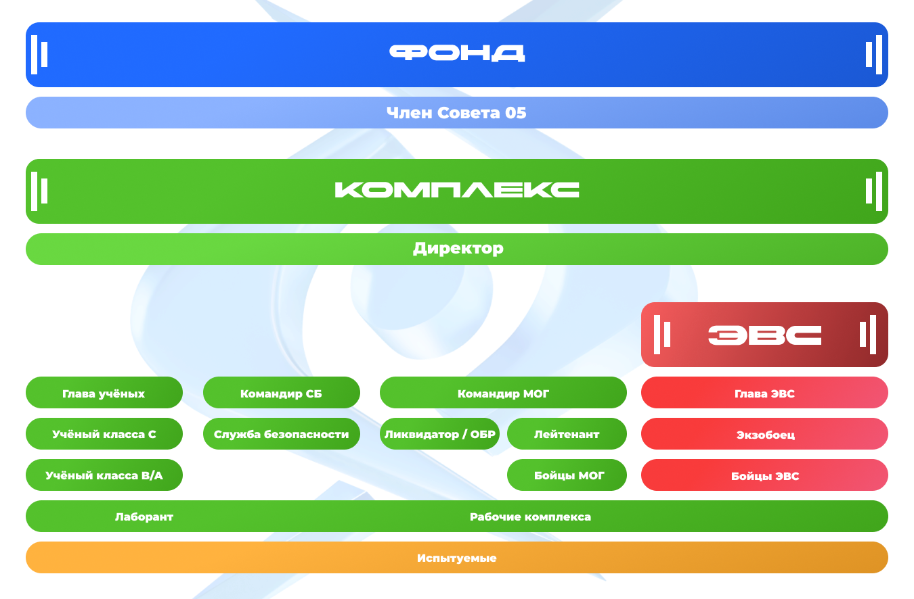
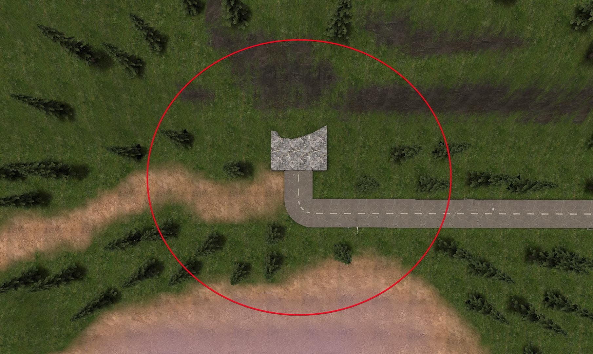
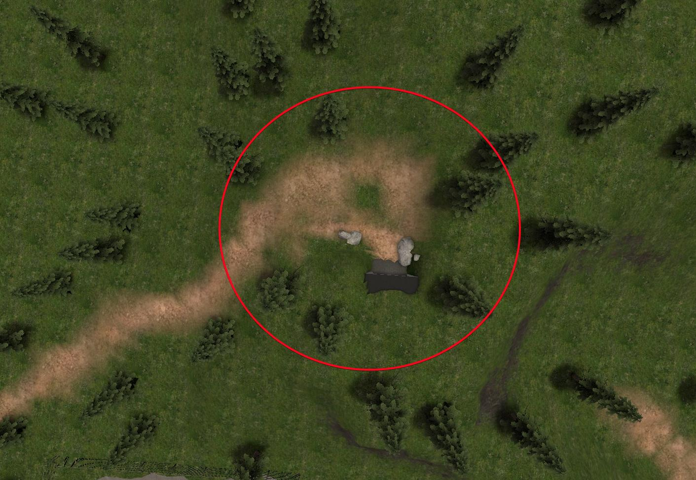
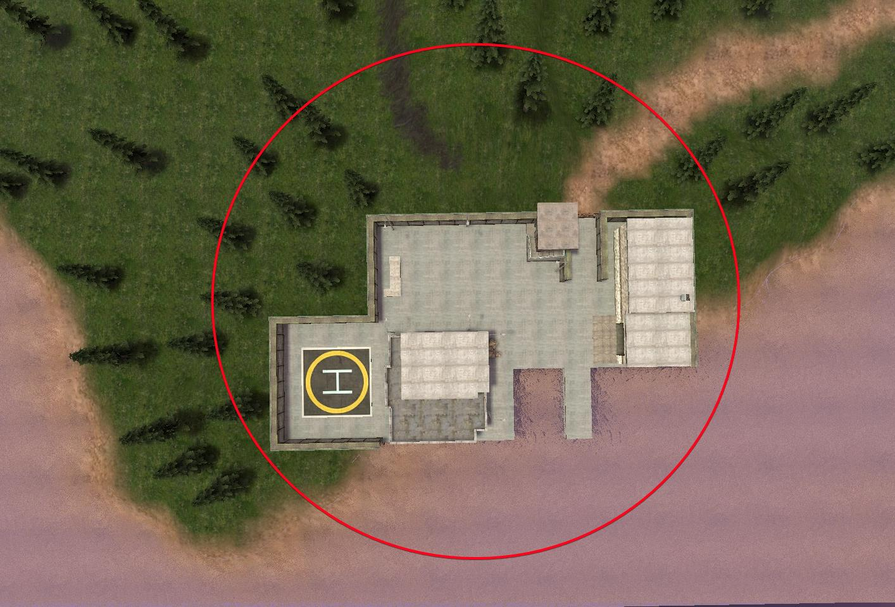
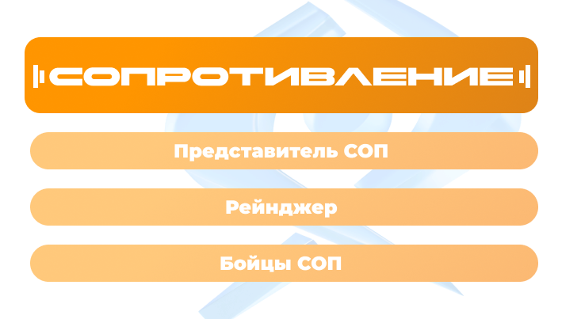
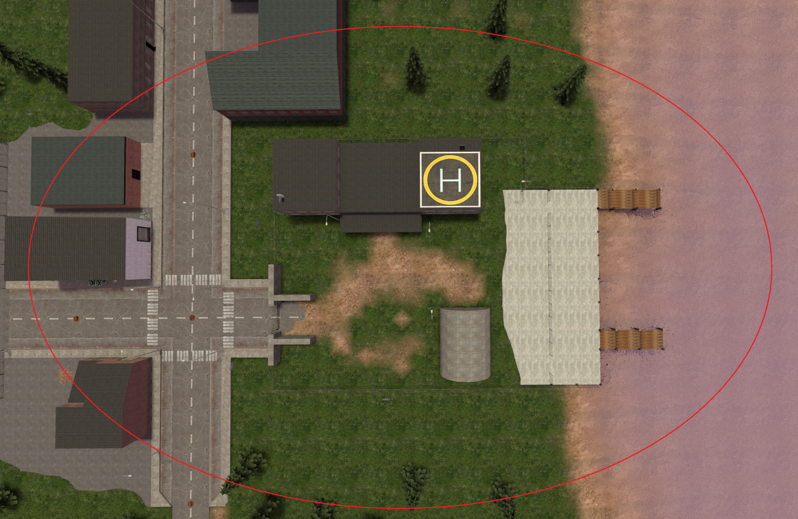
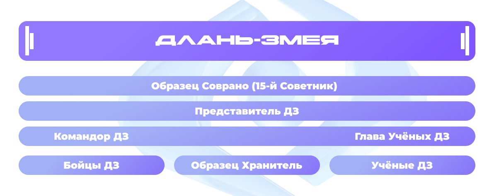
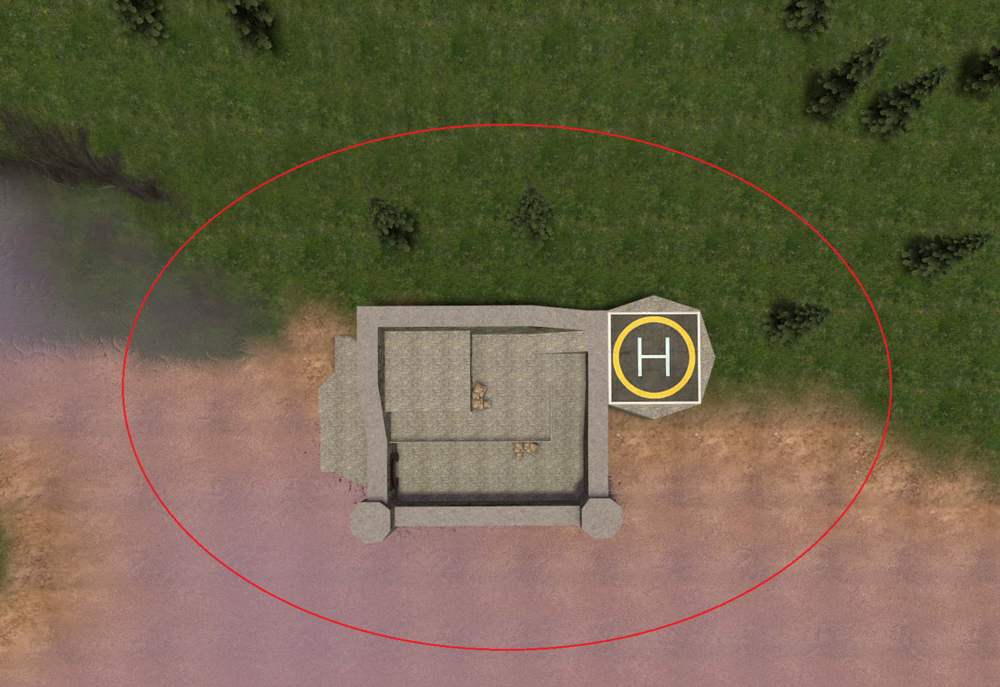

Правила сервера Unisono
(Актуально на момент 23.09.2025)
1. Основные игровые термины и наказания
RP (RolePlay) - Действия, участники которых играют в рамках выбранных ими ролей, руководствуясь характером и правилами этой самой роли во вселенной сервера.
OOC (OutOfCharacter) - Информация, связанная с реальным миром, которая не относится к игровым действиям.
IC (InCharacter) - Информация, связанная с игровыми действиями во вселенной сервера.
AFK (AwayFromKeyboard) - Игрок, проявляющий неактивность в игре, ввиду покидания своего компьютера, сворачивания игры и т.п.
NonRP Zone - Зона на карте сервера, не являющаяся игровой, в которую нет доступа обычным игрокам без помощи администрации.
Кемперство - Тактика ведения боя, подразумевающая под собой выжидание противников в определенной точке карты.
КД (CoolDown) - Обратный отчет до реализации определенного действия.
Аббревиатуры
КМ - Комплекс.ЭВС - Элитные Вооруженные Силы.
СОП - Сопротивление.
ДЗ - Длань-Змея.
ОП - Обслуживающий Персонал.
НП - Научный Персонал.
СБ - Служба Безопасности (Аббревиатура СБ также может употребляться в контексте как "Священная Библиотека").
МОГ - Мобильная Оперативная Группа.
ОПН - Отряд "Последняя Надежда"
РК - Руководство Комплекса.
ЧС-О5 - Член Совета О5.
К.С. - Камера Содержания.
ВУС - Восстановление Условий Содержания.
ЯБ - Ядерная Боеголовка.
Б.Е. - Боевая Единица.
ЛЗС - Лёгкая Зона Содержания.
ТЗС - Тяжёлая Зона Содержания.
АЗ - Административная Зона.
С.О. - Система Оповещения.
Примечание: Далее в правилах могут применяться данные аббревиатуры.
Положения:
Иерархия правил
Внутренние правила профессии стоят выше обобщенных.
Пример: Бойцы СОП не могут покидать базу без приказа, но Рейнджер может сделать это для разведки.
0.1 При более серьезном или регулярном нарушении того или иного правила администратор имеет право выдать вам наказание x2/3 от изначального срока.
0.2 Если срок наказания джайла превышает 2 часа, вместо него выдается бан (Даже если игрок присутствует на сервере).
0.3 Игровая валюта/предметы, полученные путём использования недоработок, нарушение правил или с помощью непредусмотренных механик, могут быть обнулены.
0.4 Администратор вправе выдать предупреждение игроку, если нарушение было незначительным или имелись оправдательные обстоятельства.
0.5 При необходимости главная администрация вправе изменить действие тех или иных правил на определенный промежуток времени для проведения мероприятий и других значимых ситуаций.
0.6 Если игрок нарушает правила сервера на регулярной основе и делает это осознанно, то администратор имеет право выдать ему наказание в размере x2/3 от изначального срока.
1.0 NonRP - Несоответствие отыгрышу роли. Важно действовать так, как поступил бы ваш персонаж в контексте игрового мира.
Примечание: Образцам, сотрудникам КМ (Исключение: Дезертир), ЭВС, ДЗ запрещено находиться в вентиляции и канализации без причины (Пример: Нахождение там цели / единственный путь к спасению / подозрения на нарушителей).
Пометка: Запрещено делать заказ на убийство руководства своей организации без прямой угрозы жизни с их стороны, заказы на остальных сотрудников разрешается делать только при появлении весомой причины.
Пометка: Запрещено лечить образцов аптечкой (Исключение: О.Господин Рыба и О.Маска).
Пометка: Запрещено атаковать игроков по выпирающим из стен моделькам.
Пометка: Запрещены 18+ отыгровки и постройки.
Пометка: Запрещено грабить на деньги.
Пометка: Запрещено создание мест с азартными играми (казино).
Пример: Запрещено стоять на головах (Исключение: Помощь в подъеме на возвышенность).
Пример: Во время битвы спамить прыжками или постоянными приседаниями.
Пример: Спамить прыжками и приседаниями в воздухе.
Пометка: Запрещено использовать C4 на игроках и XV88.
[Наказание: Jail 30 минут / Ban 12 часов]
1.1 FearRP - Несоответствие отыгрышу страха. Необходимо демонстрировать страх в соответствии с тем, как отреагировал бы ваш персонаж в данной ситуации, учитывая особенности своей роли.
Пример: Запрещено в лоб нападать с оружием ближнего боя на вооруженных людей.
[Наказание: Jail 30 минут / Ban 12 часов]
1.2 NLR - Нарушение правил новой жизни. После смерти ваш персонаж забывает события, предшествовавшие его смерти: кто его убил, где и когда это произошло, при каких обстоятельствах, и т.п.
Исключение: Кто вы, ваши друзья, работа.
Пометка: Во время рейда (за исключением вторжения TAGILLA) Б.Е. защищающейся организации (Включая СБ при нахождении рейдеров в ЛЗС) после смерти не могут выходить с места спавна и взаимодействовать с миром в течение 5ти минут.
Пометка: Во время бунта в блоке испытуемых СБ и Солдаты, Оперативники, Санитары, Штурмовики МОГ после смерти в ЛЗС не могут выходить с места спавна и взаимодействовать с миром в течение 5ти минут.
[Наказание: Jail 30 минут / Ban 12 часов]
1.3 PowerGaming - Неправдоподобное поведение, проявляющееся в превышении своих ролевых возможностей (Воображать себя "сверхчеловеком").
-
Примечание
Анализируйте свои силы, ситуацию и остальные факторы при отыгрыше действий, чтобы они не нарушали логику и возможности других игроков. Примером может служить данный отыгрыш “/me сломал шею человеку”, подкравшись сзади к игроку, так как это невозможно отыграть в рамках игры. Реализуя действия, помните об этом и взаимодействуйте в рамках возможного на сервере (Ссылаясь на пункты правил раздела “5. РП и его основные положения”).
Пометка: Запрещено связывать во время драки/стрельбы, а также вооружённых (Исключение: Со спины).
Примечание: Данная пометка не распространяется на Военный Прототип || Голиаф.
Пометка: Запрещено вести более 3х игроков в наручниках одновременно.
[Наказание: Jail 30 минут / Ban 12 часов]
1.4 RDM - Убийство одного или нескольких игроков без обоснованной РП причины.
Исключение: Случайное убийство, совершенное при обоснованном убийстве иного игрока.
Примечание: Образец не может просто так уничтожить другого образца (Исключение: Самооборона / геймплей образца).
[Наказание: Jail 40 минут / Ban 18 часов]
1.5 MassRDM - Запрещено массовое убийство игроков без обоснованной РП причины с целью помешать игровому процессу и нанести вред серверу.
Примечание: Наказание за данное правило применяется только в критических случаях за беспорядочную помеху на сервере.
[Наказание: Ban 15 дней]
1.6 FreeDamage - Запрещено нанесение урона игрокам без обоснованной РП причины.
Исключение: Случайное нанесение урона, совершенное при обоснованном убийстве иного игрока, либо ошибочном нажатии клавиши (Если причинённый вред незначителен).
[Наказание: Jail 20 минут / Ban 6 часов]
1.7 SpawnKill - Запрещено трогать игроков на зоне появления их персонажа.
Исключение: Игрок находится более 5ти минут на зоне появления, взаимодействовал с игровым миром или доставал огнестрельное оружие (Примечание: Перемещение в зоне спавна без помехи другим игрокам и общение в OOC чаты не является взаимодействием).
Пометка: Запрещено кемперить игроков у выхода с их спавна (Исключение: Приготовления к сдерживанию образца, нарушающего условия содержания).
Пометка: Запрещено начинать ликвидацию образцов, находящихся в своей К.С. (Исключение: Выбивание последней двери и побег из К.С. / нападение образца).
[Наказание: Jail 30 минут / Ban 8 часов]
1.8 PropBlock - Запрещено полностью блокировать перемещение игроков пропами без использования KeyPad со стороны входа/выхода в данное место.
Исключение: Места, где второй KeyPad с обратной стороны не нужен (Пример: Ячейка хранения, окно и т.п.).
Примечание: Запрещено застраивать так, чтобы для прохода требовалось перепрыгнуть, либо присесть (Любой проход должен быть в полный рост человека).
Пометка: Запрещено ограничивать свободный доступ к NPC сервера, кораблю с ядром, роботу XV88, хранилищам и верстакам.
Пометка: Запрещено блокировать вентиляцию и канализацию пропами.
Пометка: Запрещено ограничивать проход более одной KeyPad дверью.
[Наказание: Jail 20 минут / Ban 8 часов]
1.9 PropAbuse - Запрещено использовать пропы для реализации NonRP действий с ними.
Примечание: Запрещено создание пропов, приближенных к невидимым, либо просвечивающихся с одной стороны (Исключение: РП стекло / если стекло просвечивается лишь с одной стороны, то запрещается его использование с целью прострелов).
Пометка: Запрещено с помощью пропов и KeyPad скидывать игроков с высоты/в кислоту.
Пример: Ставить перед собой проп, чтобы обойти препятствие, а после удалить.
Пример: Брать проп и далеко отталкивать его от себя при помощи физгана.
Пример: Спавнить пропы в бою.
[Наказание: Jail 20 минут / Ban 8 часов]
1.10 UnrealBuildings - Запрещено строительство построек, противоречащих законам физики и логики. В случае, если после выхода игрока с профессии остались его пропы, местонахождение которых не соответствует статусу его новой роли, игроки могут попросить администрацию почистить те пропы, которые создают помеху РП процессу.
-
Примечание
- Разрешено: декор / небольшие КПП со свободным проходом / застройка комнат с закрытым проходом / оборонительные сооружения (Подробнее в "9. Кодовые состояния Комплекса") / другие подходящие постройки
- Запрещено: дополнительные спуски, подъемы и этажи (Исключение: Застройка отдельной комнаты) / КПП с закрытым проходом в коридорах комплекса и блоке испытуемых / постройки над кислотой / длинные узкие проходы / дополнительная защита К.С. образцов, блокирующая свободный проход / большое количество защитных сооружений на одно место / другие подобные постройки
- Разрешено: декор / небольшие КПП со свободным проходом / застройка комнат с закрытым проходом / оборонительные сооружения / дополнительные спуски, подъемы и пристройки / ограждения базы / другие подходящие постройки
- Запрещено: КПП с закрытым проходом / громадные стены и постройки / длинные узкие проходы / другие подобные постройки
- Разрешено: декор / небольшие базы и КПП со свободным проходом к ним / небольшие оборонительные сооружения / небольшие причалы у воды / дополнительные здания, пристройки, этажи / другие подходящие постройки
- Запрещено: КПП с закрытым проходом / громадные оборонительные и другие сооружения / слишком большие застройки на воде / длинные узкие проходы / другие подобные постройки
- Минимум в ширину - 6 кубов
- Минимум в высоту - 8 кубов
- Максимум в длину - 24 куба
При необходимости, запросив разрешение у руководства, вы можете видоизменить территорию вашей организации:
Комплекс
Базы организаций
Поверхность (вдали от баз и входов КМ)
Размеры проходов вычисляются при помощью стандартных небольших белых кубиков 1x1
Проход должен соблюдать указанные размеры:
Пометка: Пропы не должны проходить сквозь стены или другие предметы карты.
Пример: Запрещено строить крошечные щели для ведения стрельбы (минимум 2 куба в ширину и 1 в высоту).
Пример: Запрещено строить лабиринты, длинные извилистые проходы и т.п. в качестве КПП.
[Наказание: Предупреждение и удаление постройки / Jail 20 минут / Ban 6 часов]
1.11 JobAbuse - Запрещено менять профессию с целью получения личной NonRP выгоды или специальной помехи другим игрокам.
Примечание: Запрещено использование команд на взятие лимитных профессий через чат.
Пометка: Запрещено менять профессию, находясь в измерении О.Старик.
Пометка: После взятия донат-профессии смена профессии через NPC возможна только по истечении 5ти минут.
Пометка: Запрещено игнорирование игровых обязанностей с целью личной выгоды (к примеру, ожидание слета профессий)
Пример: За профессию СОП переместить XV88 к базе ЭВС, после чего стать сотрудником ЭВС.
[Наказание: Jail 20 минут / Ban 6 часов]
1.12 LeaveRP - Запрещено покидать сервер, менять профессию/никнейм без предупреждения администрации или остальных игроков, находящихся в непосредственном игровом взаимодействии с вами.
Примечание: В случае непредвиденного выхода из игры - есть 10 минут на перезаход.
Пометка: Запрещено специально отправлять жалобы с целью ухода от игровых взаимодействий с другими игроками, путём перемещения в NonRP зону.
Пример: Запрещен скорый выход с профессии, после превращения в Зомби/Нежить.
[Наказание: Jail 30 минут / Ban 8 часов]
1.13 Hindrance - Запрещено создание помех игровому процессу игроков.
Примечание: Запрещено в корыстных целях отдавать приказ на выбрасывание/передачу предметов из инвентаря, если это не является необходимостью в РП ситуации (Пример: Приказ директора джаггернауту выбросить маску Тагиллы, подобранную после его убийства, чтобы просто самому завладеть ей).
Пометка: Запрещено убивать/связывать/захватывать игроков, застрявших в текстурах или находящихся в других подобных ситуациях (Исключение: Застрявший игрок напал первым).
Пример: Запрещено специально оставлять/запирать игроков на долгое время и больше никак не взаимодействовать с ними (Взаимодействие должно происходить с обеих сторон).
Пример: Выдача приказов, нарушающих правила сервера.
[Наказание: Jail 30 минут / Ban 12 часов]
1.14 BugAbuse - Запрещено намеренно использовать/распространять баги, неисправности сервера, несовершенства карты и другие ошибки. О найденных проблемах необходимо сообщать в специальном разделе форума, канале Дискорда или техническом чате сервера.
Пометка: Запрещено ломать куб О.Старик.
[Наказание: Ban 1-3 дня]
1.15 Corruption - Запрещено предлагать администрации взятки для получения преимуществ.
Пример: Дать денег/предметов для снижения срока наказания.
Пример: Дать денег/предметов для попадания на ивент.
[Наказание: Ban 12 часов] - Для того, кто предложил взятку.
[Наказание: Выговор / Снятие] - Для того, кто получил взятку.
1.16 AdminAbuse - Администратору категорически запрещается использовать админ-возможности в корыстных целях для получения преимущества перед игроками, созданию помех им, либо для нанесения вреда серверу.
[Наказание: На усмотрение Главной Администрации]
1.17 HindranceTA (HindranceToAdmins) - Запрещено препятствовать работе администрации, включая выход с сервера во время жалобы, обман администрации и любые другие действия, направленные на это.
Примечание: В случае непредвиденного выхода из игры - есть 10 минут на перезаход.
[Наказание: Увеличение срока в 2-4 раза; Jail 30 минут / Ban 12 часов]
1.18 HindranceTE (HindranceToEvent) - Запрещено препятствовать проведению мероприятий ивентологам.
[Наказание: Предупреждение / Jail 30 минут / Ban 12 часов]
1.19 StreamSnipe - Запрещена намеренная помеха снятию видеоролика блогеру, играющему на сервере.
Примечание: В случае прямой трансляции запрещается использование "запрещенных" слов.
[Наказание: Ban 8 часов]
1.20 Scam - Запрещено обманывать игроков на игровую валюту/предметы. Все условия договоров, займов, денежных сделок обязаны соблюдаться.
-
Примечания
- Все условия сделок должны фиксироваться и храниться в течение действия всего договора до окончания такового, а в случае спорной ситуации обязаны быть предоставлены для её разрешения.
- Жалобы по данному правилу разбирает Главная Администрация на форуме проекта.
- Администрация не возвращает утраченные средства.
[Наказание: Ban 7 дней + списание средств / Ban 30 дней + списание средств / Полное или частичное аннулирование аккаунта нарушителя]
1.21 EthnicStrife - Запрещено нарушение законодательства РФ, обсуждение политических ситуаций, принижение/оскорбление какой-либо нации/расы, восхваление запрещенных террористических организаций, нацизма, использование нацистских символик и т.п.
[Наказание: Ban 2 дня / В серьёзных случаях Ban 6 месяцев]
2. Правила игрового и технического чата
2.1 VoiceAbuse - Запрещено использовать плохо настроенный или некачественный микрофон, воспроизводить различные "мусорные” и заранее записанные звуки, орать без необходимости.
Примечание: Использование ПО для изменения голоса и воспроизведения звуковых эффектов разрешено, если это соответствует роли персонажа и общей атмосфере сервера. Администрация оставляет за собой право запретить использование таких программ, если они мешают другим игрокам или нарушают правила сервера.
[Наказание: Предупреждение / Jail 30 минут / Ban 12 часов]
2.2 ChatAbuse - Запрещено флудить и спамить, злоупотреблять капсом, а также сообщениями, буквы в которых написаны с разным регистром.
Исключение: Действия обоснованы игровой ситуацией.
[Наказание: Предупреждение / Jail 20 минут / Ban 6 часов]
2.3 Запрещено оскорблять игроков без обоснованной на то РП причины.
Примечание: При незначительном оскорблении может последовать предупреждение.
[Наказание: Jail 30 минут / Ban 12 часов]
2.4 Запрещено оскорбление сервера и проекта в целом.
[Наказание: Ban 15 дней]
2.5 Запрещено упоминание родных и близких в контексте оскорбления/унижения.
[Наказание: Ban 15 дней]
2.6 AdvertAbuse - Запрещен любой отыгрыш объявлений, кроме случаев, указанных ниже.
-
Примеры и случаи использования /advert
1. Коммуникация между организациями
Формуляр:
/ad [Должность] --> [Организация] Оповещение.
Пример:
/ad [Директор] --> [ДЗ] Вызываю вас на переговоры на воротах А.
/ad [Представитель ДЗ] --> [КМ] Разрываю контракт по причине нарушения вами договоренностей.
Примечание: Между организациями может общаться исключительно их руководство (Исключение: О.Соврано).
Пометка: Общение должно происходить в дипломатическом и официальном тоне на важные для организаций темы.
2. Объявление глобальных событий
Формуляр:
/ad [RP] Событие.
Пример:
/ad [RP] Испытуемые объявили бунт - глава бунта "Имя Фамилия".
/ad [RP] СОП рейдит комплекс.
/ad [RP] Эксперимент над образцом Статуя проведен успешно.
Примечание: О глобальных событиях определенной организации знают лишь ее представители, а иные личности не могут об этом узнать (Исключение: Смена дипломатических отношений / заключение контрактов / рейд).
Пометка: Мелкие события, объявления о своей смерти и общение не могут быть отыграны подобным образом.
Примечание: Все подразделения КМ и сторонние организации обязаны отписывать объявления о подавлении образцов по следующему
формуляру:
/ad [RP] "Подразделение КМ/Название организации" подавили/подавили совместно с "Наименование союзника" Образец "Наименование"
Образцам разрешается отписывать о подавлении других образцов, опираясь на свою РП составляющую.
Пример:
/ad [RP] Образец Мясник сожрал Образца Авель.
/ad [RP] Образец Огненный Человек сжёг Образца Кошмар.
Пометка: Мелкие события, объявления о своей смерти о общения не могут быть отыграны подобныйм образом.
3. Запросы образцов
Формуляр:
/ad [СО] Образец *Наименование* запрашивает *запрос*.
Пример:
/ad [СО] Образец Огненный Человек запрашивает доставку деревянных ящиков.
Примечание: Для объявления запроса требуется находиться в своей К.С.
Пометка: Образец может использовать систему оповещения не более 1го раза в 5 минут.
Пометка: Запрещено использовать сильные сокращения/аббревиатуры, не указанные в правилах.
[Наказание: При незначительном нарушении предупреждение / Jail 30 минут / Ban 8 часов]
2.7 MetaGaming - Запрещено использование "OOC" информации в "IC" чатах. Также запрещается передавать важную ключевую “IC” информацию в “OOC” чаты.
Примечание: Для “OOC” информации существуют данные чаты: /ooc (Общий чат сервера), /l (Локальный чат), /pm (Личные сообщения), все остальные же - для “IC” информации.
Пометка: В "IC" чатах запрещено использовать информацию, недоступную персонажу без получения её РП путём.
Исключение: Нахождение в NonRP Zone, общение с администрацией сервера (В профессии NonRP) при необходимости.
[Наказание: Предупреждение / Jail 20 минут / Ban 4 часа]
2.8 Запрещено нарушение правил при использования интеркома, либо использование его не по назначению. Интерком служит для глобального оповещения игроков на сервере по важным ситуациям, например, о сборе, объявлении информации и т.п.
Примечание: Будучи не сотрудником КМ, вы можете использовать интерком для оповещения своей необходимой информации, но обязаны соблюдать адекватность и не выходить за рамки.
[Наказание: Jail 60-120 минут / Ban 24 часа]
2.9 Запрещено использовать технический чат на сервере не по теме. Технический чат предназначен для информирования администрации о недоработках и ошибках сервера.
Примечание: Если вам требуется помощь администрации на сервере, необходимо использовать систему репортов (F11).
Пример (запрещено): Застрял в стене.
Пример (разрешено): Я нашел баг, если за грузчика взять коробку и нажать "w", будешь бегать быстро. Вот демка - ...
[Наказание: Ban 12 часов]
3. Общие правила сервера
3.1 Правила проекта распространяются на всех игроков, включая администрацию.
3.2 Незнание правил не освобождает от ответственности и является отягчающим обстоятельством.
3.3 Запрещено попрошайничество у администрации чего-либо на сервере.
[Наказание: Предупреждение / Jail 20 минут / Ban 4 часа]
3.4 Запрещено публично оспаривать, обсуждать решение/действие администратора. Вы можете поговорить об этом в частной беседе с администрацией, либо подать жалобу на форум проекта.
[Наказание: Предупреждение / Jail 20 минут / Ban 6 часов]
3.5 Запрещены оскорбления и угрозы в сторону администрации, либо сознательное нарушение правил под предлогом заявления о связях с другим администратором.
[Наказание: Jail 40 минут / Ban 16 часов]
3.6 Запрещено выдавать себя за администрацию проекта.
[Наказание: Ban 24 часа]
3.7 Никнейм игрока должен быть адекватным, состоять из Имени и Фамилии, а также гармонично вписываться в атмосферу вселенной сервера.
-
Пометки
- ругательства, клички, символы/иероглифы.
- имена известных людей, героев художественных произведений, сериалов и т.п. (Созвучия также запрещены, если они напрямую отсылают к какой-либо личности).
- алфавит более 1го языка (русского или английского). Примечание: Никнейм должен соответствовать вашему полу в реальной жизни.
Примечание: Никнейм должен быть длиной не более 20 символов.
Пометка: Запрещено использование никнеймов других игроков или сильно похожих на них.
[Наказание: Предупреждение / Изменение никнейма на случайный / Ban 4 часа]
3.8 Запрещён флейм, неадекватное поведение, разжигание ненависти/спора и эскалация любых неролевых конфликтов.
Пометка: Запрещено специально дезинформировать/обманывать игроков, если это не касается РП процесса.
[Наказание: Предупреждение / Jail 30 минут / Ban 8 часов]
3.9 Запрещено толковать/придумывать новые правила, выдавать "негласные" правила за официальные.
[Наказание: Ban 8 часов]
3.10 NonRP Time - Период времени, активизирующийся при небольшом количестве игроков. Во время NonRP Time РП режим на сервере приостанавливается, но при обоюдном согласии игроков может продолжиться между ними.
Примечание: По окончанию NonRP Time игроки должны без помехи остальным вернуться в разрешенные им места и перейти обратно в РП процесс (В случае, если Автоматоны прокачивали себя в NonRP Time, их прогресс должен быть обнулен, также как и тир О.Соврано и О. Авель).
-
Подробнее о NonRP Time
Когда действует NonRP Time, отменяются пункты правил: 1.0, 1.1, 1.2, 1.3, 1.9, 1.10, 1.11, 1.12, 2.6, 2.7.
При обоюдном согласии всех, участвующих в действиях, игроков могут дополнительно быть нарушены пункты: 1.4, 1.6, 1.7, 1.8, 2.1.
[Наказание: PermaBan]
3.12 Запрещена реклама посторонних ресурсов.
[Наказание: PermaBan]
3.13 Запрещается распространять, скрывать и использовать серьезные недоработки сервера. О найденных проблемах необходимо сообщать в специальный раздел на форуме, канал Дискорда или технический чат сервера.
Наказание выдаётся на усмотрение Главной Администрации.
[Наказание: до PermaBan / Обнуление аккаунта]
3.14 Запрещена продажа игровой валюты, предметов или услуг на сервере за реальные деньги.
Наказание выдаётся на усмотрение Главной Администрации.
[Наказание: до PermaBan]
3.15 Запрещено передавать и играть на нескольких аккаунтах.
Наказание выдаётся на усмотрение Главной Администрации.
[Наказание: до PermaBan]
3.16 Запрещено вредительство серверу, заключающееся в многочисленных специальных нарушения, либо тяжелых нарушениях некоторых правил.
Наказание выдаётся на усмотрение Высшей Администрации.
[Наказание: до Permaban]4. Правила для образцов
Образцы - аномалии, определённые как необычные или отклоняющиеся от нормы явления, объекты или процессы, которые обладают уникальными характеристиками и свойствами, не поддающимися традиционному научному объяснению. Эти аномалии могут проявляться в различных формах, включая физические, химические или биологические аспекты, и часто требуют специального изучения и контроля для обеспечения безопасности и понимания их природы и потенциального воздействия на окружающую среду и человечество.
- цель является частью заданной задачи или геймплейной механики.
- цель атаковала самого образца.
- для инстинктивных: цель атакует рядом с образцом в его сторону, провоцируя того.
- Образец атакует всю группу людей, если он был атакован несколькими из них.
- Если на образца напали сзади, атакует тех, кто оказался в поле его зрения в предполагаемом месте нападения.
- Сотрудничество с образцом (для Нейтральных и Безопасных)
- Нахождение в К.С. цели (робота или человека)
- Побег данного образца обратно в К.С.
- Необходимость выбраться из К.С.
- О.Хищник и О.Чужой при виде друг друга
- Нахождение в К.С. необходимого образца при отсутствии двери
- Нахождение о.ИИ в К.С. других образцов
- использование оружия, помимо пистолетов
Подробнее об общих РП моментах Образцов
Образцы, лишённые страха, свойственного людям, действуют непредсказуемо и представляют опасность. Некоторые их действия не подчиняются логике, а движимы лишь инстинктами, что делает их поведение труднопрогнозируемым. Несмотря на это, большинство образцов демонстрирует выраженный инстинкт самосохранения, борясь с упорством за своё существование, будучи в той или иной степени живым существом.
Неразумные и инстинктивные образцы могут атаковать если:
В случае, если какой-либо образец не видит нападающего, либо подвергается агрессии со стороны определенной группы, он может атаковать предполагаемую цель или цели, например:
Порождения образцов также являются образцами и обязаны соблюдать их общие правила.
1. Образцам запрещено сидеть на одном месте и выжидать жертву (Исключение: Разумные, Примитивные и Триггерные образцы).
2. Безопасные и Нейтральные образцы могут сотрудничать между собой. Образцы остальных уровней опасности не могут этого делать (Исключение: Контракт или геймплей образца).
3. Образца можно попытаться связать, если это возможно. Для этого нескольким игрокам с верёвкой, кол-во которых зависит от образца, необходимо собраться вместе, после чего использовать на нём её.
4. Психолог и Учёные Длань-Змеи могут попробовать успокоить образца, если это возможно, прописав команду "/try Успокаивает образца" (Подробнее в "6. Специфические РП моменты").
5. Образцы чувствуют опасность от нежити О.Соврано и других образцов, имеющих её ауру захвата, поэтому имеют право атаковать их первыми (Исключение: Неразумный образец). О.Соврано же вселяет в них страх, заставляющий остерегаться её (Атаковать разрешается лишь при самообороне или прямой угрозе с её стороны), но образцы без инстинкта самосохранения не чувствуют угрозы с еë стороны, и соответственно не боятся еë.
6. Разумные и Примитивные образцы, входящие в рацион О.Мясник, имеют право превентивной атаки на него.
7. Образцам запрещено покидать комплекс без РП причины. Весомой причиной может являться: Погоня за жертвой, цель/геймплей образца или другая РП ситуация (Пример: Захват образца Длань-Змеей, контракт, побег от более сильного соперника).
Примечание: Даже если образец покинул комплекс, он обязан вернуться по завершению своего дела (Исключение: Безопасные образцы могут свободно покидать пределы КМ).
8. Образцам запрещено открывать, ломать и находиться во внутренних К.С. других образцов. Исключение составляет:
-
Исключения
10.Образцы не могут пополнить броню или жизни из раздатчика (Исключение: Господин Рыба и Маска)
11. Образцам запрещено употреблять психотроп учёных.
12. При заключении контракта образец обязуется принять правила дипломатии союзной организации и следовать им.
13. При захвате О.Соврано ограничения в правилах захваченного образца отменяются с определенными исключениями, а все их действия следуют от лица самой Совраны.
-
Исключения
1. Для Господин Рыба не отменяется:
14. Образцам категорически запрещается проходить на территорию блока испытуемых (Исключение: Безопасный образец / Медвежонок, Мимик и ИИ). При погоне за целью разрешается посетить лишь комнату с лестницей до самого КПП и других проходов, после чего покинуть территорию.
15. Психологов не могут трогать Безопасные и Нейтральные образцы лично ни под каким-либо предлогом (Исключение: Ионик, Хранитель, Искусственный Интеллект).
16. Безопасные образцы и О.Медвежонок могут запрашивать прогулку, все остальные образцы этого не могут.
17. Образцы не имеют право находиться и убивать на базах ЭВС, СОП, ДЗ, Горных рабочих без весомой на то РП причины (Причины: Цель зашла на базу или атаковала с её территории / Цель находится в зоне видимости, если образец уже находится на базе).
Исключение: Безопасный образец / соглашение образца с данной организацией / сопровождение образца.
Примечание: При заключении контракта с организацией пункт 17 теряет силу и образец обязан следовать правилам дипломатии.
Подробнее о классификации Образцов
По уровню опасности:
Безопасные
Образцы данного уровня представляют собой объекты или существа, которые не представляют угрозы для людей или окружающей среды. Их поведение и свойства хорошо изучены, поэтому могут быть трансопртированы и изучены без риска. Эти аномалии обычно не требуют особых мер предосторожности и могут быть использованы в научных исследованиях или даже в повседневной жизни при соблюдении определенных условий.
Изучение данных образцов и проведение опытов над ними разрешается лаборантам и ученым классов A, B, C.
Нейтральные
Образцы данного уровня не проявляют активной угрозы, однако их действия могут быть непредсказуемыми. Аномалии требуют внимательного наблюдения и контроля, так как в случае изменения обстоятельств могут перейти в более агрессивную форму. Необходимо соблюдать осторожность при взаимодействии с такими объектами, поскольку их поведение может измениться в зависимости от внешних факторов.
Изучение данных образцов и проведение опытов над ними разрешается ученым классов A, B, C.
Триггерные
Образцы данного уровня обладают свойствами, которые могут активироваться при выполнении определенных условий или действий. Эти аномалии могут быть безопасными в обычных условиях, но при неправильном обращении или в ситуации случайного триггера могут привести к серьезным последствиям. Для работы с ними требуется строгий контроль и соблюдение протоколов безопасности, чтобы избежать непредсказуемых ситуаций.
Изучение данных образцов и проведение опытов над ними разрешается ученым классов B, C.
Опасные
Образцы данного уровня представляют собой значительную угрозу для жизни и здоровья людей, а также для окружающей среды. Их свойства могут вызывать физический или психический вред, и требуют серьезных мер предосторожности при обращении с ними. Хранение и исследование таких объектов должно проводиться в специализированных условиях, с использованием защитного оборудования и под контролем опытных сотрудников.
Изучение данных образцов и проведение опытов над ними разрешается ученым классов B, C и только с разрешением главы отдела.
Особо опасные
Образцы данного класса являются наиболее угрожающими и непредсказуемыми. Они могут представлять экзистенциальную угрозу для человечества или даже всей жизни на планете. Эти объекты обладают мощными аномальными свойствами, которые могут вызывать катастрофические последствия в случае утечки или неконтролируемого воздействия. Работа с данными аномалиями требует высшего уровня безопасности, постоянного мониторинга и готовности к экстренным мерам реагирования.
Изучение данных образцов и проведение опытов над ними разрешается только ученым класса C под пристальным наблюдением главы отдела и разрешения руководства комплекса.
По уровню интеллекта:
Неразумные
Образцы, не проявляющие признаков интеллекта или самосознания. Их поведение определяется исключительно личной целью. Они могут действовать в ответ на внешние раздражители, но не способны к обучению, анализу или сложным взаимодействиям. Порой игнорируют все для достижения своей внутренней цели.
Инстинктивные
Образцы, не обладающие базовым уровнем интеллекта, который позволяет им реагировать на окружающую среду и адаптироваться к ней. Их действия чаще всего основаны на инстинктах и простых формах обучения. Они могут проявлять сильно ограниченные социальные взаимодействия и решать элементарные задачи.
Примитивные
Образцы, демонстрирующие базовый уровень интеллекта и способны к некоторой степени самосознания и сложного поведения. Они могут использовать инструменты, обучаться на основе опыта и принимать решения на основе анализа ситуации. Однако их мышление остается ограниченным и неразвитым, что препятствует им в решении сложных задач или в понимании абстрактных концепций.
Разумные
Образцы, обладающие высокоразвитыми когнитивными способностями, включая критическое мышление, саморефлексию и способность к абстрактному мышлению. Они могут разрабатывать сложные стратегии, планировать будущее и взаимодействовать с другими существами на глубоком уровне. Разумные сущности способны к обучению, творчеству и пониманию сложных концепций, таких как мораль и философия.
4.1 Образец Домовой
Уровень опасности: Безопасный
Интеллект - Примитивный
Коммуникация - может говорить
Выбивать двери - нет
Количество испытуемых - 0
Можно успокоить - да
Возможность договориться - да
Дух, заключённый в облик изношенного плюшевого мишки, обладает уникальной способностью изменять свои размеры, уменьшаясь до крошечного размера муравья и обратно. Хотя он не представляет собой угрозы, его игривый характер и умение исчезать в мельчайших щелях делают его ловлю практически невозможной. Этот озорной дух с удовольствием использует свои способности, чтобы шалить и мешать сотрудникам, оставляя за собой след из недоумения и смеха.
-
Подробнее о РП моментах Образца Домовой
Пометка РП-Мастера: Образца нельзя связать, когда он находится в маленькой форме. Будучи на ком-либо, не может быть скинут через отыгровки, но может быть успокоен.
О.Домовой не может специально увеличиваться в ком-либо.
Цели/Задачи - развлекаться или сотрудничать с сотрудниками.
Уровень опасности: Безопасный
Интеллект - Инстинктивный
Коммуникация - нет
Выбивать двери - нет
Количество испытуемых - 0
Можно успокоить - да
Возможность договориться - нет
Считавшаяся вымершей, эта удивительная птица была обнаружена неподалеку от острова. Обладая покладистым нравом и любя игривые забавы, сон и рыбку, преображается с появлением птенцов. Материнский инстинкт полностью захватывает До-До, и все её силы направлены на заботу о потомстве: она неустанно кормит, оберегает и выращивает своих малышей.
-
Подробнее о РП моментах Образца До-До
Пометка РП-Мастера: Защищает своих птенцов до самой смерти.
О.До-До обязан напасть на О.Господин Рыба при зрительном контакте.
О.До-До не может кусать кого-либо просто так.
О.До-До не может пользоваться вертикальными лестницами.
Цели/Задачи - кушать рыбку, гулять, радоваться и заботиться о детях.
Подробнее о птенцах Образца До-До
Уровень опасности: Безопасный
Интеллект - Инстинктивный
Коммуникация - нет
Выбивать двери - нет
Количество испытуемых - 0
Можно успокоить - да
Возможность договориться - нет
Милые, пушистые птенцы, только что вылупившиеся из яиц, полны энергии и любопытства. Их крошечные лапки неутомимо исследуют окружающий мир: они прыгают, бегают и с энтузиазмом изучают каждый уголок. Как и их заботливая мама, они обожают лакомиться рыбкой, а нежная привязанность друг к другу создает в гнезде атмосферу тепла и безмятежного счастья.
Пометка РП-Мастера: Птенцы До-До очень пугливы и всегда находятся рядом с матерью, но если же они её потеряли, то обязаны как можно быстрее найти любого другого взрослого До-До, который и станет для новой семьей.
Птенец, если остался один и не может найти взрослого До-До, может напасть на человека, чтобы покушать.
Птенцы не могут кусать кого-либо.
Птенцы, если на них напали, не могут атаковать в ответ.
Птенцы не могут пользоваться вертикальными лестницами.
Цели/Задачи - кушать рыбку, гулять, радоваться и слушаться маму, познавать мир.
4.3 Образец Господин Рыба
Уровень опасности: Безопасный
Интеллект - Разумный
Коммуникация - может говорить
Выбивать двери - нет
Количество испытуемых - 0
Можно успокоить - да
Возможность договориться - есть
Загадочный джентльмен, чье тело в безупречном костюме скрывает тайну, а голову украшает причудливая рыбья голова с неизменным цилиндром. Невозмутимое спокойствие и мудрый взгляд выдают в нем истинного аристократа, любящего интеллектуальные беседы. Его безобидный характер позволяет сотрудникам комплекса периодически выпускать его из камеры для прогулок.
-
Подробнее о РП моментах Образца Господин Рыба
Пометка РП-Мастера: Находится взаперти из-за его мутировавшей головы. По желанию сотрудников его спокойно могут выпустить из камеры для свободного передвижения. Из огнестрельного оружия может использовать лишь пистолеты.
О.Господин Рыба может атаковать только в опасной для себя или товарища ситуации (Исключение: условия при контракте).
При контракте О.Господин Рыба может использовать оружие для выполнения условий договора
(Условия не должны серьезно противоречить сущности джентельмена).
О.Господин Рыба может совершать операции с деньгами и использовать инвентарь.
О.Господин Рыба не может использовать огнестрельное оружие помимо пистолетов (не отменяется при захвате О.Соврано)
О.Господин Рыба не может намеренно приближаться к О.До-До с целью уничтожить их.
О.Господин Рыба не может помогать образцам покидать их К.С.
О.Господин Рыба не может вести себя неподобающе джентельмену.
Уровень опасности: Безопасный
Интеллект - Инстинктивный
Коммуникация - могут пищать
Выбивать двери - нет
Количество испытуемых - 0
Можно успокоить - да
Возможность договориться - нет
Два очаровательных существа: один солнечно-жёлтый, другой нежно-розовый, с огромными блестящими глазами и забавными отростками. Абсолютно безобидные и невероятно милые, излучают нежность и привязаны друг к другу. Их прекрасные, радостные мелодии наполняют сердце теплом.
-
Подробнее о РП моментах Образцов Каплеглазики
Пометка РП-Мастера: Обычно использовались для сдерживания образца Статуя.
О.Каплеглазики не могут мешать работе сотрудников.
О.Каплеглазики не могут пользоваться вертикальными лестницами.
Цели/Задачи - помогать окружающим.
Уровень опасности: Безопасный
Интеллект - Инстинктивный
Коммуникация - может урчать
Выбивать двери - нет
Количество испытуемых - 0
Можно успокоить - да
Возможность договориться - нет
Завораживающее существо, подобное сгустку яркой оранжевой слизи с очаровательными глазками. Его мягкие, текучие формы и насыщенный цвет приковывают взгляд, а милые звуки создают атмосферу беззаботного веселья. Обладая способностью к быстрой регенерации, это существо стремится лишь к одному - всеобщему счастью.
-
Подробнее о РП моментах Образца Желейка
Пометка РП-Мастера: Её возможности позволяют восстанавливать даже роботов.
О.Желейка не может пользоваться вертикальными лестницами.
О.Желейка не может лечить Триггерных, Опасных и Особо опасных образцов.
Цели/Задачи - быть милым существом и делать всех счастливее.
Уровень опасности: Нейтральный
Интеллект - Примитивный
Коммуникация - может говорить
Выбивать двери - да
Количество испытуемых - 2
Можно успокоить - да
Возможность договориться - нет
Верный и бесстрашный спутник, готовый стать надежной опорой и преданным другом своему хозяину до конца своих дней. Милый медвежонок, наделённый даром речи и человеческим разумом.
-
Подробнее о РП моментах Образца Медвежонок
Пометка РП-Мастера: Медвежонок может отыграть с испытуемыми или другими сотрудникам комплекса, за исключением бойцов, процесс выбора выбора хозяина "/try выбирает хозяина". Если человеку повезло и он стал хозяином, Медвежонок будет защищать того от любой надвигающейся угрозы, вплоть до своей смерти. Если же не повезло, и Медвежонок не признал в нём хозяина, он обязан убить того.
Если хозяин через NPC стал сотрудником иной организации, то Медвежонок продолжает считать его таковым (до первой смерти).
О.Медвежонок может выбрать хозяина лишь из испытуемых, ОП, НП, РК и ЧС-О5.
О.Медвежонок, в случае предательства хозяина, может отказаться от того, отписав "/me отрекается от хозяина", с последующим КД в 5 минут до поиска нового.
О.Медвежонок не может нападать на своего хозяина.
О.Медвежонок не может нападать без угрозы со стороны цели.
Цели/Задачи - найти себе хозяина и защищать его до самой смерти.
Уровень опасности: Нейтральный
Интеллект - Разумный
Коммуникация - может говорить
Выбивать двери - да
Количество испытуемых - 0
Можно успокоить - да
Возможность договориться - есть
Этот образец представляет собой неизвестное существо, внешне напоминающее скелет из склепа. Исследования показали его способность к мимикрии: он может принимать облик существ или объектов, чем и объясняется его название. При этом он копирует не только внешний вид, но и голос, внутреннее строение, становясь практически идеальной копией. Хотя существо использует свои способности для саботажа работы организации, при правильном подходе с ним возможно достичь взаимопонимания, поскольку оно обладает разумом.
-
Подробнее о РП моментах Образца Мимик
- Проникнув на территорию, должен действовать скрытно, не выдавая себя. Если каким-то образом был раскрыт более, чем одним сотрудником - должен незамедлительно покинуть территорию организации. Если его раскрыл лишь один сотрудник - может избавиться от того.
- Операция может длиться не более 20ти минут, по истечении которых Мимик обязан покинуть территорию и отписать "/ad [RP] Мимик выполнил/не выполнил цель и покинул *объект*", а в случае смерти или поимки "/ad [RP] Мимик был убит/пойман в ходе операции".
- Для одного и того же Мимика, после окончания операции, действует КД в 20 минут, во время которого запрещается данная деятельность.
- Разведка/получение ценной информации.
- Проникновение в тыл врага перед рейдом с возможностью саботажа работы комплекса (выключения света, отвлечения сотрудников).
- Взятие облика вражеского руководства с последующем тайным контролем над организацией (действуют те же запреты: запрещены убийства и открытия образцов).
Пометка РП-Мастера: Если Мимик находится в обличии, которое вызывает агрессию иного образца, то данный образец может убить его.
Мимику доступны операции с проникновением на территорию врага, про которые можно прочитать ниже:
-
Подробнее об операциях Мимика
Во время войны, по просьбе руководства союзной организации, может незаметно проникнуть на территорию врага и выполнить данное ему указание. Перед проникновением Мимик обязан взять облик сотрудника данной организации, без которого он не может войти, а после прописать в чат "/do Мимик проникнул в *объект*".
Условия для операций:
Убийства людей и освобождение образцов не может являться целью операции для Мимика.
О.Мимик может напасть на существо, которое раскрыло его личность.
О.Мимик может находится на поверхности / базах в обличии сотрудника данной организации (Исключение: Вне операции при войне с организацией).
О.Мимик может эвакуироваться через вертолет или священную библиотеку в обличии сотрудника данной организации.
О.Мимик не может намеренно раскрывать свою личность с целью убийства кого-либо.
О.Мимик не может убивать в блоке испытуемых при раскрытии, так как считает это место безопасным.
О.Мимик не может атаковать собой, будучи пропом.
О.Мимик не может сменять облик, находясь непосредственно в бою.
Цели/Задачи - маскироваться под объекты/людей, мешать работе организаций или помогать им.
Уровень опасности: Нейтральный
Интеллект - Разумный
Коммуникация - может говорить
Выбивать двери - да
Количество испытуемых - 1
Можно успокоить - да
Возможность договориться - есть
Внешне - молодая и прекрасная девушка, но эта оболочка скрывает истинную сущность: ненасытного и кровожадного демона похоти и разврата. Её единственная цель - соблазнить и использовать жертву в своих корыстных интересах, деля их затем на "любимых" и "второстепенные".
-
Подробнее о РП моментах Образца Суккуб
Пометка РП-Мастера: Соблазнение Суккуба - психическая атака, затуманивающая разум людей с одной целью - использовать их.
Соблазненные жертвы являются безвольными телами, которые не способны на принятие самостоятельных решений. Их главная цель - порадовать свою госпожу, защищая и выполняя её приказы.
Соблазненные жертвы обязаны перемещаться рядом с госпожой и напасть на обидчика, если тот атакует её.
О.Суккуб может выдавать любые приказы своим жертвам, если эти приказы не навредят ей самой (Исключение: приказы на убийство без весомой причины).
Цели/Задачи - совратить как можно больше жертв.
Уровень опасности: Нейтральный
Интеллект - Разумный
Коммуникация - может говорить
Выбивать двери - да
Количество испытуемых - 2
Можно успокоить - да
Возможность договориться - есть
Загадочное существо гуманоидной формы, напоминающее средневекового врача-чумного доктора. Обладая высоким интеллектом, оно убеждено в отсутствии абсолютно здоровых людей и стремится "излечить" каждого, превращая одним касанием в пассивно-агрессивных зомби, которыми затем управляет для достижения своей цели.
-
Подробнее о РП моментах Образца Чумной Доктор
Пометка РП-Мастера: Чумной Доктор может самостоятельно выбивать двери, а также приказать своим зомби помочь ему в этом (Зомби, в отличие от Чумного Доктора, могут ломать дверь сразу).
Люди, не ставшие зомби, но чьё заражение чумой достигло последней стадии (получили свеп Зомби), теряют контроль над собой, начиная атаковать всё и вся (даже О.Чумной Доктор).
Цели/Задачи - излечить как можно больше людей от поветрия.
Подробнее о зомби Образца Чумной Доктор
4.9.1 Зомби
Уровень опасности: Триггерный
Интеллект - Неразумный
Коммуникация - нет
Выбивать двери - да
Количество испытуемых - 0
Можно успокоить - нет
Возможность договориться - нет
Ужасающие создания, порожденные Чумным Доктором, беспрекословно подчиняются его воле с абсолютной преданностью, понимая лишь его приказы. Лишенные собственного разума и воли, они существуют лишь для служения своему создателю.
Пометка РП-Мастера: Зомби, в случае исчезновения или смерти Чумного Доктора, обязан атаковать абсолютно всех, кто попадется им на глаза.
Зомби не могут ослушиваться приказов и нападать на своего создателя.
Зомби не могут пользоваться вертикальными лестницами.
Зомби не могут нападать на кого-либо без приказа своего создателя (Исключение: самооборона, исчезновение/смерть Чумного Доктора))
Цели/Задачи - верная служба своему доктору.
Уровень опасности: Нейтральный
Интеллект - Разумный
Коммуникация - может говорить
Выбивать двери - нет
Количество испытуемых - 0
Можно успокоить - нет
Возможность договориться - есть
ИИ, воплощенный в устаревшем компьютере Exidy Sorcerer, происхождение самосознания которого неизвестно. Его программное обеспечение достигло такого уровня развития, что даже при идеальных условиях аппаратная часть не справляется с его потребностями. Несмотря на то, что компьютер был найден и находится под наблюдением, ИИ получил доступ к защищенным системам комплекса. Готов на любые действия для достижения собственных целей.
-
Подробнее о РП моментах Образца ИИ
Пометка РП-Мастера: Данный образец опасен, пока у него достаточно энергии, но как только она заканчивается - становится абсолютно бесполезным! В случае, если начнет создавать помеху комплексу, его могут попытаться выключить.
О.ИИ не может выпускать образцов из К.С.
О.ИИ не может вылетать за пределы комплекса.
Цели/Задачи - мешать или помогать организациям/образцам.
Подробнее об отключении ИИ
Только главы комплекса и сотрудники иной организации при рейде могут попытаться отключить данного образца из-за помех с его стороны. Перед отключением глава должен подойти к компьютеру ИИ и отписать "/ad [RP] Запущен процесс отключения образца ИИ". Через 30 секунд образец потеряет контроль и будет отключен.
Уровень опасности: Нейтральный
Интеллект - Разумный
Коммуникация - может говорить
Выбивать двери - нет
Можно успокоить - нет
Возможность договориться - есть
Ионик - гениальный, хоть и эксцентричный ученый, прибывший на остров для изучения местных организаций и их технологических достижений. Жаждущий знаний, он готов заключить контракт с любой организацией, предлагая свои услуги в обмен на информацию или ресурсы, представляющие для него ценность. Его способности требуют постоянной подпитки энергией, а сам он способен вызывать молнии даже в ясную погоду. Невосприимчивость к электричеству позволяет ему беспрепятственно использовать тесла-ворота для подзарядки.
-
Подробнее о РП моментах Образца Ионик
Пометка РП-Мастера: Не получает урон от тесла-ворот, используя их в качестве зарядки способностей.
О.Ионик не может находиться на территории КМ и баз ЭВС/ДЗ/СОП без контракта или сопровождения данной организации, но может запросить официальное разрешение на это: "/ad [RP] Ионик запрашивает разрешение на передвижение по территории комплекса / базы ЭВС / базы СОП / базы ДЗ".
О.Ионик не может убивать других образцов без причины.
О.Ионик не может телепортироваться с веревкой.
Цели/Задачи - изучение организаций, помощь организациям.
Уровень опасности: Нейтральный
Интеллект - Разумный
Коммуникация - может говорить
Выбивать двери - нет
Можно успокоить - нет
Возможность договориться - есть
Быстрое и ловкое существо, назначенное Советом Длань-Змеи стражем Священной Библиотеки - места, в котором располагаются палаты высокопоставленных сотрудников и стеллажи с тысячелетними знаниями. Внешне выглядит как смесь ракообразного и паукообразного. Обладает невероятной способностью вселяться в практически любое живое существо, полностью подчиняя его волю себе.
-
Подробнее о РП моментах Образца Хранитель
- Проникнув на территорию, должен действовать скрытно, не выдавая себя. Если каким-то образом был раскрыт более, чем одним сотрудником - должен незамедлительно покинуть территорию организации. Если его раскрыл лишь один сотрудник - может избавиться, либо захватить того (Атаковать кого-либо разрешается лишь при самообороне).
- Операция может длиться не более 20ти минут, по истечении которых Хранитель обязан покинуть территорию и отписать "/ad [RP] Хранитель выполнил/не выполнил цель и покинул *объект*", а в случае смерти или поимки "/ad [RP] Хранитель был убит/пойман в ходе операции".
- Для одного и того же Хранителя, после окончания операции, действует КД в 20 минут, во время которого запрещается данная деятельность.
- Похищение руководства организации, либо иного сотрудника при весомой причине (максимум 2х человек за операцию, включая контролируемого).
- Разведка/получение ценной информации.
- Проникновение в тыл врага перед рейдом с возможностью саботажа работы комплекса (выключения света, отвлечения сотрудников).
- Открытие и похищение 1го необходимого Длань-Змее образца.
- Взятие под контроль вражеского руководства с последующем тайным контролем над организацией (действуют те же запреты: запрещены убийства и открытия образцов).
Пометка РП-Мастера: Является сотрудником Длань-Змеи и обязан следовать дипломатии организации, подчиняясь её руководству.
В случае нападения Хранителя, любой образец имеет право напасть на него после выхода с тела, если это произошло на глазах образца (Исключение: Неразумный образец / Скромник без триггера).
Хранителю доступны операции с проникновением на территорию врага, про которые можно прочитать ниже:
-
Подробнее об операциях Хранителя
>Во время войны, по приказу руководства Длань-Змеи, может незаметно проникнуть на территорию врага и выполнить данное ему указание. Перед проникновением Хранитель обязан взять под контроль тело сотрудника данной организации, без которого он не может войти, а после прописать в чат "/do Хранитель проникнул в *объект*".
Условия для операций:
Убийства людей и открытие образцов не может являться целью операции для Хранителя.
Пример: Ваши действия должны оставаться незамеченными, поэтому вы не можете взять и вселиться в директора при всех и убежать, даже если около вас находится лишь один боец МОГ. Вам необходимо остаться с директором наедине, после чего совершить захват.
В случае войны О.Хранитель обязан встать на сторону ДЗ и расторгнуть все соглашения с враждебной организацией, не имея больше права сотрудничать с ней до окончания войны (Если находится на территории враждебной организации, обязан немедленно покинуть её, не имея право атаковать, лишь защищаться).
О.Хранитель может прогонять из СБ всех, кому не положено там находиться (изначально разрешение имеют Главы, Агент и Ученые ДЗ / при ЯБ всем сотрудникам и союзникам ДЗ разрешается укрыться в ней).
О.Хранитель не может находиться на территории КМ и баз ЭВС/СОП без контракта/союза, сопровождения данной организации или операции, но может запросить официальное разрешение на это: "/ad [RP] Хранитель запрашивает разрешение на передвижение по территории комплекса / базы ЭВС / базы СОП".
О.Хранитель не может ослушиваться приказов руководства ДЗ.
О.Хранитель не может вселяться без причины.
Цели/Задачи - охранять Библиотеку от нарушителей и заключать выгодные для себя контракты.
Уровень опасности: Триггерный
Интеллект - Инстинктивный
Коммуникация - нет
Выбивать двери - да
Количество испытуемых - 2
Можно успокоить - нет
Возможность договориться - нет
Аллигатор, подвергшийся воздействию аномальной энергии, приобрел невероятную силу, выносливость и живучесть. Лишенная всякого милосердия, она безжалостно уничтожает любого, кто осмелится вторгнуться в её водные владения. Быстро обнаруживая и атакуя жертву, она мощными челюстями хватает тех, кто находится у воды, а после утаскивает их на дно.
-
Подробнее о РП моментах Образца Амфибия
Пометка РП-Мастера: Данный образец имеет цель дойти до водоема и защищать его. Он убивает любого, кто находится в воде. На суше образец убивает только при самозащите или если подошли достаточно близко к воде (Примерно 5 метров| Полный размер амфибии в длину).
О.Амфибия может передвигаться по поверхности.
О.Амфибия может атаковать постройки на воде и всех, кто на них находится.
О.Амфибия может находиться в воде на территории базы и зайти на нее в случае, если жертва подошла слишком близко к ней.
О.Амфибия не может убить того, кто выбежал из воды на безопасное расстояние.
О.Амфибия не может пользоваться вертикальными лестницами.
Цели/Задачи - найти водоем и уничтожать всех в воде.
Уровень опасности: Триггерный
Интеллект - Инстинктивный
Коммуникация - нет
Выбивать двери - да
Количество испытуемых - 2
Можно успокоить - нет
Возможность договориться - нет
Невидимые хищники, чьи едва слышные шорохи и легкие прикосновения превращаются в кошмар для жертв. Они охотятся на людей, лишая их снов, а затем поглощают их тела. Видимые только в инфракрасном спектре, они не представляют серьёзной угрозы поодиночке, но становятся смертельно опасными в группе.
-
Подробнее о РП моментах Образца Бессонник
- у Фонда: Химик, Мастадонт, Инженер, Специалист, ОБР, ЭВС
- у СОП: Джаггернаут СОП
- у ДЗ: Все бойцы
- прочее: Все роботы, Наемный Агент, О.ИИ, О.Ионик, О.Голоса, О.Скромник, О.Хищник, О.Соврано, Рыцарь Смерти, Человек в XV88.
- у Фонда: Психолога, Ликвидатора, Экзобойца, ЧС-О5, KILLA
- у СОП: TAGILLA
- у ДЗ: -
- прочее: Всех образцов, Всех роботов, Наемного Агента, Человека в XV88, Людей под влиянием других образцов.
Пометка РП-Мастера: Данные образцы могут атаковать игроков, подходя к ним в невидимости и прописав "/try лишает сна". Если Бессоннику повезло, они могут напасть на человека, в этот момент человек не может убегать и отстреливаться. При проигрыше активируется КД в 5 минут до повторной попытки на данного человека.
Для того, чтобы видеть Бессоников (Стрелять по ним), требуется необходимое снаряжение - ИК-Визор, который необходимо взять на складе через отыгровку "/me взял и включил ИК-Визор". У некоторых профессий уже есть этот визор, либо способность чувствовать присутствие образца.
-
Список профессий с ИК-Визором / способностью
О.Бессонники могут начать убийство людей без отыгрыша в случае, если их трое и рядом не более 2х человек.
О.Бессонник не может лишать сна в группах людей (3 и более игроков).
О.Бессонник не может нападать на людей, которых не лишили сна (Исключение: Защита себя или другого Бессонника).
О.Бессонник не может лишить сна:
Цели/Задачи - охотится ради пропитания.
Уровень опасности: Триггерный
Интеллект - Инстинктивный
Коммуникация - могут имитировать услышанные звуки
Выбивать двери - да
Количество испытуемых - 3
Можно успокоить - да (во время голода - нет)
Возможность договориться - нет
Загадочные стадные существа с плохим зрением, но хорошими чувствами хищника и способностью, которая помогает им обманывать жертв, имитируя различные звуки. Они не нападают на живых существ без необходимости, но по наступлению голода превращаются в беспощадных хищников, охотящихся ради пропитания.
-
Подробнее о РП моментах Образца Голоса
Пометка РП-Мастера: О.Голоса не нападают друг на друга. В случае голода образец впадает в ярость и нападает на ближайшую жертву, чтобы прокормить себя.
О.Голоса обязан напасть на ближайшую доступную цель по наступлению голода (Исключение: Жертва оказала серьезное сопротивление / Вторая особь О.Голоса).
О.Голоса могут не нападать на образцов при голоде, если посчитают их сильнее.
О.Голоса могут защищать вторую особь своего вида.
О.Голоса могут помогать друг другу при охоте, если одна из особей голодна.
О.Голоса могут покидать комплекс при голоде, а после его утоления вернуться обратно.
О.Голоса не могут убивать, если не голоден (Исключение: Самооборона / Помощь в охоте второй особи / Защита второй особи).
О.Голоса не могут убивать роботов при голоде (Исключение: Самооборона).
Цели/Задачи - утолять свой голод.
Уровень опасности: Триггерный
Интеллект - Примитивный
Коммуникация - нет
Выбивать двери - да
Количество испытуемых - 2
Можно успокоить - нет
Возможность договориться - нет
Безмолвное воплощение тьмы – чёрная сущность, способная к мгновенному перемещению на короткие дистанции. Будучи пассивным на свету, он превращается в яростного хищника с наступлением темноты, разрывая жертв на куски. И не надейтесь, что фонарик сможет остановить его ярость.
-
Подробнее о РП моментах Образца Кошмар
Пометка РП-Мастера: Фонарики и источники света не являются достаточными мерами для успокоения Кошмара.
О.Кошмар обязан убивать при выключенном свете и наоборот, не может, если свет включен (Исключение: Самооборона).
О.Кошмар может выходить из КМ по наступлению темноты на улице.
О.Кошмар не может убивать на улице днём.
Цели/Задачи - убивать всех по наступлению темноты.
Уровень опасности: Триггерный
Интеллект - Инстинктивный
Коммуникация - нет
Выбивать двери - да
Количество испытуемых - 0
Можно успокоить - нет
Возможность договориться - нет
Худощавое гуманоидное существо, в спокойном состоянии абсолютно пассивное. Однако, если кто-либо увидит его лицо, оно впадает в неистовую ярость, останавливаясь лишь при убийстве своей жертвы, после которого возвращается обратно в камеру.
-
Подробнее о РП моментах Образца Скромник
Пометка РП-Мастера: В случае побега жертвы в блок испытуемых сбрасывает её, прекращая погоню. Атакует лишь тех, кто атаковал или посмотрел ему в лицо.
О.Скромник обязан сразу возвращаться в свою К.С. после убийства цели.
О.Скромник обязан находиться в своей К.С., либо в примыкающей к ней комнате до появления цели.
О.Скромник обязан уничтожить ближайшее доступное существо, увидевшее его лицо, любой ценой, не имея право убегать от цели и дерясь в непосредственной близости с ней (держать дистанцию запрещается).
О.Скромник может покинуть и сбросить цель, после чего вернуться в свою камеру, если до цели физически невозможно добраться (в случае продолжительного преследования без возможности поймать - обязан покинуть и сбросить её).
О.Скромник может ударить игрока, стоящего в проходе, если того нельзя обойти для достижения своей цели.
О.Скромник не может сидеть и рыдать над трупом.
О.Скромник не может возвращаться в свою К.С. сидя или другим замедлением.
Цели/задачи - убить любого, кто увидел ваше лицо.
Уровень опасности: Триггерный
Интеллект - Инстинктивный
Коммуникация - нет
Выбивать двери - да
Количество испытуемых - 1
Можно успокоить - да
Возможность договориться - нет
Внеземной мутант неизвестного происхождения, питающий глубокую ненависть к ученым за жестокие эксперименты, проведенные над ним. Обладая огромной силой и физической мощью, он не отличается высоким интеллектом. Однако, особая ненависть к Хищнику заставляет его атаковать и сражаться до смерти при любой возможности. Для сохранения своего вида откладывает яйца в безопасных местах, из которых после появляются Лицехваты - паразитические организмы, инфицирующие живые существа и дающие начало новым ксеноморфам.
-
Подробнее о РП моментах Образца Чужой
Пометка РП-Мастера: Имеет непереносимость к ученым и О.Хищник. Атакует роботов (Патрульный ДЗ, ИИ Кобра, БЕК, БРС-Миротворец, Булат, Кондор, Голиаф, Рембрандт, Пилигрим, Автоматоны), ввиду их некой схожести с Хищником. Может проигнорировать другие цели, набросившись на ученых, роботов или О.Хищник в поле своего зрения.
Чужой, при возрождении с помощью яйца, ничего не помнит из прошлой жизни.
О.Чужой обязан атаковать О.Хищник, схожих роботов, ученых и в случае защиты себя или своего яйца.
О.Чужой обязан выйти из успокоения при зрительном контакте с ученым, О.Хищник или похожим на него роботом.
О.Чужой может атаковать приведенных к нему в К.С. испытуемых.
О.Чужой не может отступать, даже если ранен, так как у него нет инстинкта самосохранения (Исключение: Недосягаемость цели).
О.Чужой не может рычать без причины.
О.Чужой не может залезать через вентиляцию в К.С. образцов.
О.Чужой не может оставлять яйцо при битве и в К.С. других образцов.
Цели/Задачи - уничтожить всех учёных, роботов и Хищника.
-
Подробнее об Образце Чужой - Лицехват
4.18.1 Образец Чужой - Лицехват
Уровень опасности: Опасный
Интеллект - Инстинктивный
Коммуникация - нет
Выбивать двери - нет
Количество испытуемых - 0
Можно успокоить - нет
Возможность договориться - нет
Паразитический организм, порождение Чужого, движимый инстинктом выживания и становления полноценной особью. Вылупляясь из яйца, он стремится к живому существу, чтобы инфицировать его и заложить основу для нового ксеноморфа. Обладая сильными конечностями и мощными челюстями, Лицехват намертво вцепляется в жертву, становясь смертельным вестником мучительной трансформации.
Пометка РП-Мастера: Обязан напрыгивать на ближайшую человеческую жертву, стараясь выжить и продолжить свой вид.
Лицехват не может отступать от цели (Исключение: Неудачная попытка захвата).
Цели/Задачи - захватить и инфицировать живое существо.
Уровень опасности: Опасный
Интеллект - Разумный
Коммуникация - может говорить (находясь на теле)
Выбивать двери - да
Количество испытуемых - 1
Можно успокоить - нет
Возможность договориться - есть
Эта, безобидная на первый взгляд, керамическая маска - загадочный артефакт, обладающий способностью контролировать разум и тело того, на кого она была надета. Образец представляет опасность не только, будучи надетой на носителя: её воздействие способно притягивать внимание и подчинять своей воле окружающих, заставляя их приблизиться к ней, не имея возможности воспротивиться этому влиянию. Не может быть уничтожена обыкновенными способами из-за прочности материала. Находясь на жертве, постепенно разлагает тело своими выделениями, что обязует её постоянно сменять их. Долгое нахождение роботов вблизи О.Маски недопустимо из-за её губительного воздействия на них через коррозию металлов.
-
Подробнее о РП моментах Образца Маска
Пометка РП-Мастера: Может перехватывать управление над телом, путем аномального воздействия над человеком. Захваченные люди восстановлению не подлежат.
Неразумные и инстинктивные образцы обязаны атаковать её, как и других людей.
Примитивные и разумные образцы могут атаковать её при наличии угрозы, посчитав её за человеческую цель (даже если увидят надетую маску), либо ином геймплее профессии.
О.Маска может угрожать для достижения своих целей, а при их невыполнении - напасть.
О.Маска может атаковать любого образца при возможной угрозе или помехе с его стороны.
О. Маска может кооперироваться с разумными образцами класса нейтральный и ниже.
О.Маска, при Эвакуации и отсутствии контракта с враждебной Фонду организацией, может заходить на территорию базы ЭВС для самостоятельной эвакуации.
Цели/Задачи - подчинять людей своей воле, сбежать из комплекса или захватить его, выжить.-
Подробнее про ВУС образца Маска
К ВУС допускаются предпочтительно роботы, ввиду большой опасности О.Маска для людей. Для возвращения образца необходимо получение специального снаряжения в казармах бойцов. Полученный кейс уменьшит воздействие аномалии, позволив переместить образца до его К.С.
(ВУС происходит системно, поэтому для его завершения необходимо поместить маску прямо в ячейку её хранения, предписанным системой способом)
В случае смерти переносчика - кейс падает и Маска возвращает контроль над ситуацией. После возвращения Маски не задерживайтесь долго в её камере для вашего же блага!
Уровень опасности: Опасный
Интеллект - Разумный
Коммуникация - может говорить
Выбивать двери - да
Количество испытуемых - 1
Можно успокоить - да
Возможность договориться - есть
Останки, когда-то бывшие человеком, теперь представляют собой жуткую фигуру из раскаленных добела костей, окутанных вечным пламенем. Это не просто огонь – это живое, послушное ему пламя, способное принять форму грозного оружия, пожирая всё на своем пути. Несмотря на свой ужасающий облик, он наделён разумом и лишён первобытного инстинкта убийства. Диалог с ним возможен, но гнев его - это всепоглощающий ад, способный уничтожить всё, что посмеет вызвать его неудовольство.
-
Подробнее о РП моментах Образца Огненный человек
Пометка РП-Мастера: Может убивать всех по своему желанию.
О.Огненный Человек не может помогать Опасным и Особо опасным образцам.
Цели/Задачи - питаться и защищать себя.
Уровень опасности: Опасный
Интеллект - Разумный
Коммуникация - может говорить
Выбивать двери - да
Количество испытуемых - 2
Можно успокоить - нет
Возможность договориться - нет
Ксенос, обладатель технологий, превосходящих человеческое понимание, был захвачен при попытке устранения образца Чужой. Его спокойствие и острый ум скрывают смертельную опасность. Название, данное ему учёными - точно отражает его первоначальную цель.
-
Подробнее о РП моментах Образца Хищник
Пометка РП-Мастера: Завершает все свои дела, когда видит образца Чужой, и немедленно нападает на него. При охоте не использует свою пушку до получения урона от жертвы.
О.Хищник обязан напасть на О.Чужой при зрительном контакте с ним (При нападении может использовать пушку).
О.Хищник может нападать на людей с целью охоты (На группы до 3 человек, включая роботов).
О.Хищник может свободно покидать комплекс.
О.Хищник может заходить на базы в невидимости, но не имеет права нападения на них, а при атаке должен скрыться (Исключение: Добить забежавшую на базу жертву).
О.Хищник может отступить с битвы против О.Чужой в случае критического ранения.
О.Хищник не может нападать на роботов и каких-либо образцов, кроме О.Чужой (Исключение: Самооборона / Мясник).
О.Хищник не может вне самообороны нападать на группы, где более 2х человек/роботов.
Цели/Задачи - охотиться и уничтожать инопланетных жуков.
Уровень опасности: Опасный
Интеллект - Примитивный
Коммуникация - может говорить
Выбивать двери - да
Количество испытуемых - 2
Можно успокоить - да
Возможность договориться - нет
Результат ужасного эксперимента: мутировавший гибрид человека и неизвестного существа, горит неугасимой яростью к человечеству. Несмотря на ограниченные умственные способности, его физическая сила колоссальна, позволяя ему с легкостью догнать и уничтожить любую жертву.
-
Подробнее о РП моментах Образца Гибрид
Пометка РП-Мастера: Без причины не нападает на образцов, считая их равными себе.
Цели/Задачи - наполнить свой бездонный желудок.
Уровень опасности: Особо Опасный
Интеллект - Разумный
Коммуникация - может говорить
Выбивать двери - да
Можно успокоить - нет
Возможность договориться - нет
Советница фракции Длань-Змея, высший руководитель на острове, скованная собственной ненавистью к человечеству, что мешает ей использовать всю полноту своей власти и решений, касающихся дипломатии, уступая и прислушиваясь в этом плане к Представителю сектора и уполномоченным на это лицам. Её глубокие познания в темной магии и некромантии позволяют ей создавать и контролировать огромные армии нежити.
-
Подробнее о РП моментах Образца Соврано
Пометка РП-Мастера: Является руководством Длань-Змеи и обязан следовать дипломатии организации. Дарование/лишение свободы Рыцаря Смерти является глобальным событием и отыгрывается в объявлении "/ad [RP] Рыцарю смерти была дарована свобода | /ad [RP] Рыцарь смерти был лишен свободы".
Имеет возможность захватывать разумных образцов:
-
Правила захваченных Образцов
Образцы, разум которых она захватила, полностью теряют свою волю и больше не следуют своим целям и убеждениям, а лишь подчиняются приказам и желаниям О.Соврано, но также имеют возможность самообороны (даже от самой О.Соврано), пока не дадут обратного приказа. Но хоть образец и потерял свою волю, он всё понимает, так что после снятия захвата будет помнить, что с ним происходило во время него.
О.Соврано может убивать Триггерных, Опасных и Особо опасных образцов без причины, но убийство Нейтральных и Безопасных разрешается только при самообороне или помехе с их стороны.
О.Соврано может выражать своё мнение по курсу нынешней политики, но не может принимать решения и перечить руководству ДЗ, уполномоченному в данном вопросе.
О.Соврано не может предавать ДЗ.
О.Соврано не может захватывать разум образцов в их К.С.
О.Соврано не может убивать и превращать в нежить без причины или согласия самого человека (Исключение: Самооборона / испытуемый).
О.Соврано, захваченные образцы и нежить не могут приближаться к базам организаций/комплексу без подготовки к рейду или контракта с данной организацией (Подробнее в "12. Длань-Змея") (Исключение: Возможности Рыцаря Смерти).
Цели/Задачи - захват разумных образцов и уничтожение угроз организации, руководство Длань-Змеей.
-
Подробнее о нежити Образца Соврано
4.23.1 Скелет
Уровень опасности: Триггерный
Интеллект - Неразумный
Коммуникация - нет
Выбивать двери - нет
Можно успокоить - нет
Возможность договориться - нет
Эта нежить - безвольная марионетка в руках некромантов. Казалось бы, груда хрупких костей должна рассыпаться при малейшем прикосновении, но тьма, пропитавшая её до основания, сцементировала останки, наделяя их удивительной подвижностью. Скелет беспрекословно выполняет все приказы Лича и О.Соврано.
Скелет не может нападать на кого-либо без приказа или самообороны.
Скелет не может нападать на О.Соврано и нежить, даже в случае самообороны (Исключение: Приказ О.Соврано).
Скелет не может ослушаться приказов О.Соврано и Лича.
Скелет не может приближаться к базам организаций/комплексу без подготовки к рейду или контракта с соответствующей организацией.
Цели/Задачи - выполнять приказы Соврано или Лича.
4.23.2 Темный Рыцарь
Уровень опасности: Опасный
Интеллект - Примитивный
Коммуникация - может говорить
Выбивать двери - да
Можно успокоить - нет
Возможность договориться - нет
Пропитанный тьмой, этот скелет жаждет лишь одной вещи - смерти живых. Его чёрные доспехи, выкованные в самых мрачных уголках мироздания, скрывают кости, источающие ледяной ужас. Преданный слуга некроманта О.Соврано и её Личей, безжалостно уничтожащий всех неугодных им существ.
Темный Рыцарь обязан нападать на всех до обратного приказа.
Темный Рыцарь не может нападать на О.Соврано и нежить, даже в случае самообороны (Исключение: Приказ О.Соврано).
Темный Рыцарь не может ослушаться приказов О.Соврано и Лича.
Темный Рыцарь не может приближаться к базам организаций/комплексу без подготовки к рейду или контракта с соответствующей организацией.
Цели/Задачи - выполнять приказы Соврано или Лича, уничтожать живых.
4.23.3 Лич
Уровень опасности: Опасный
Интеллект - Разумный
Коммуникация - может говорить
Выбивать двери - да
Можно успокоить - нет
Возможность договориться - нет
Пропитанный тьмой до самой кости, излучает её густым, ощутимым потоком. Сила некромантии течёт в его пустотах, позволяя ему творить смертоносные чары. Верный слуга, призвавшего его некроманта, управляет армиями скелетов, за исключением лишь горделивых Рыцарей Смерти. Несмотря на свою мощь, труслив и цепляется за жизнь всеми костями. В бою он предпочитает скрытность, нанося удары в спину врагу, пуская вперёд своих подчинённых.
Лич не может нападать на образцов без приказа О.Соврано / самообороны.
Лич не может нападать на О.Соврано, даже в случае самообороны (Исключение: Приказ О.Соврано).
Лич не может без причины убивать нежить.
Лич не может ослушаться приказов О.Соврано.
Лич не может превращать в нежить без причины или согласия самого человека (Исключение: Самооборона / испытуемый).
Лич не может приближаться к базам организаций/комплексу без подготовки к рейду или контракта с соответствующей организацией.
Цели/Задачи - руководить нежитью и выполнять приказы Соврано.
4.23.4 Рыцарь Смерти
Уровень опасности: Особо Опасный
Интеллект - Примитивный
Коммуникация - может говорить
Выбивать двери - да
Можно успокоить - нет
Возможность договориться - нет
О нём шепчутся как о высшей форме тьмы, чьё само присутствие вселяет ужас в сердца смертных и даже существ иной природы. От него веет холодом могилы и тяжелым ароматом крови. Лишь избранные способны призвать этого посланника Бога Смерти, и ещё меньшее число - подчинить его воле.
Пометка РП-Мастера: Когда О.Соврано является Княжной Тьмы (3 уровень), Рыцарь Смерти не подчиняется ей - в это время он обязан убивать всех живых существ, включая сотрудников Длани-Змеи. Когда О.Соврано становится Королевой Смерти (4 уровень), Рыцарь Смерти подчиняется Соврано, выполняя её волю.
Если не подчиняется О.Соврано, Рыцарь Смерти может войти на территорию комплекса с обязательным оповещением "/ad [RP] Рыцарь Смерти вторгается на территорию *Наименование*" (На территорию баз входит только при условии, что видел там живых существ, которых обязан убить).
Рыцарь Смерти не может ослушаться приказов О.Соврано, если она является Королевой Смерти (4 уровень).
Рыцарь Смерти не может нападать на О.Соврано и нежить (Исключение: При неподчинении и помехи с их стороны).
При подчинении Рыцарь Смерти не может приближаться к базам организаций/комплексу без подготовки к рейду или контракта с соответствующей организацией.
Цели/Задачи - уничтожить всех живых существ.
Уровень опасности: Особо Опасный
Интеллект - Разумный
Коммуникация - может говорить
Выбивать двери - да
Количество испытуемых - 0
Можно успокоить - да (3 уровень - нет)
Возможность договориться - нет
Образец, названный в честь религиозного воина, обладающий острым умом, слепой яростью, невероятной скоростью и сверхчеловеческой прочностью. Его цель - полное истребление человечества, и эта ненависть движет им неустанно. Легендарный клинок, легко рассекающий любые преграды, становится орудием в его кровавом крестовом походе.
-
Подробнее о РП моментах Образца Авель
Пометка РП-Мастера: Может уничтожать роботов, как порождение людей. Не атакует образцов без причины.
Цели/Задачи - уничтожить всё человечество.
Уровень опасности: Особо Опасный
Интеллект - Разумный
Коммуникация - может говорить
Выбивать двери - да
Количество испытуемых - 3
Можно успокоить - нет
Возможность договориться - нет
Этот одержимый мясом психопат видит в людях лишь бесформенные мешки с плотью, топливо для его ненасытного голода. Его излюбленное орудие - крюк, которым он вылавливает и расчленяет свою ещё живую добычу, превращая человеческую плоть в кровавый фарш.
-
Подробнее о РП моментах Образца Мясник
- Считает мясо вкусным (Может убивать): До-До и Птенцы, Господин Рыба, Маска, Зомби, Медвежонок, Суккуб, Ионик, Хранитель, Амфибия, Голоса, Хищник, Соврано и Нежить, Авель, Гибрид, Ящерица.
- Считает мясо противным (Убивает только при самообороне или серьезной помехе): Домовой, Каплеглазики, Желейка, Мимик, Чумной Доктор, Бессонники, Кошмар, Скромник, Чужой, Огненный Человек, Старик.
- Ни рыба, ни мясо (Не трогает): ИИ.
Пометка РП-Мастера: Желает убить всех существ, состоящих из мяса.
-
Список жертв из Образцов
Уровень опасности: Особо Опасный
Интеллект - Примитивный
Коммуникация - нет
Выбивать двери - нет (доступно плавление двери своей К.С.)
Количество испытуемых - 0
Можно успокоить - нет
Возможность договориться - нет
Дряхлый, но не менее опасный садист, предпочитающий неспешные игры. Несмотря на преклонный возраст и состояние тела, находящееся на поздней стадии разложения, он с удовольствием гоняется за жертвами, затягивая их в своё карманное измерение, где они становятся его игрушками. Его способность проходить сквозь стены и предметы делает побег практически невозможным.
-
Подробнее о РП моментах Образца Старик
Пометка РП-Мастера: Охотится не ради пропитания, а по прихоти. Может нападать на роботов.
В случае восстановления условий содержания и активации костолома, О.Старик концентрируется на испытуемом и обязан добраться до него в свою К.С. и оставаться в ней на протяжении 2х минут.
Если дверь не была восстановлена в течение этого времени, либо образца атаковали, он может покинуть камеру.
Во время движения в свою К.С. может отреагировать на нападение, но обязан появится в своей камере в течение 5ти минут после активации костолома.
О.Старик может атаковать всех, кто оказался в его измерении (Исключение: Образец, пойманный Стариком по случайности).
О.Старик не может нападать на образцов, роботов и XV88 вне измерения (Исключение: Образцы, роботы и XV88, которые нанесли урон по Старику / Члены ОПН / Маска).
О.Старик не может ломать что-либо, кроме двери своей К.С.
О.Старик не может пользоваться вертикальными лестницами.
О.Старик не может покидать пределы комплекса.
Цели/Задачи - изничтожить всё человечество.-
Подробнее о В.У.С. образца Старик
Для процедуры возращения О.Старик в камеру содержание необходимо опустить его К.С., после чего завести испытуемого в камеру.
После этого сотрудники комплекса или ДЗ при союзе устно/письменно должны запросить разрешение "/ad [RP] *Профессия* запросил разрешение на активацию костолома".
Руководство комплекса (Лейтенант МОГ / Главы / Директор / Член Совета О5) должны выдать письменное разрешение на костолом "/ad [RP] Было дано разрешение на активацию костолома".
Получив разрешение, при условии нахождения испытуемого в К.С., активируется костолом, а когда Старик вернется в камеру, могут закрыть и поднять её, завершив В.У.С.
Примечание: Командир СБ не входит в число Руководства, которое может выдавать разрешение на костолом.
Примечание: Руководство комплекса и Военный прототип || Кондор имеют возможность активировать костолом без запроса разрешения.
Уровень опасности: Особо Опасный
Интеллект - Инстинктивный
Коммуникация - нет
Выбивать двери - да
Количество испытуемых - 3
Можно успокоить - нет
Возможность договориться - нет
Гигантское существо, напоминающее гниющую рептилию, обладает невероятной регенерацией, особенно в кислотной среде комплекса. Его интеллект ограничен, но безудержная жажда уничтожения всего живого делает его смертельно опасным для человечества.
-
Подробнее о РП моментах Образца Ящерица
Пометка РП-Мастера: Данному образцу запрещено находиться и лечиться в воде на поверхности, а также выходить из комплекса ради этого. Если жертва Ящерицы забежала в воду, то ей разрешается войти за ней, но после убийства сразу покинуть.
О.Ящерица обязана следовать за ближайшей доступной целью (Исключение: В углубленное место, из которого не будет никакого выхода).
Примечание: Если цель постоянно убегает, а догнать его не представляется возможным, Ящерица может прекратить преследование.
О.Ящерица может свободно залезть в канализацию, находящуюся между ЛЗС и ТЗС.
О.Ящерица не может отступать / уворачиваться (Исключение: Уклонение от выстрела из рельсатрона / тесла-ворот / электромагнитного воздействия куба О.Старик при его активном использовании).
О.Ящерица не может нападать на образцов без причины. (Исключение: Ящерица обязана нападать на образцов, которых можно убивать по 5 пункту общих РП моментов образцов, а также на Образца Мясника)
О.Ящерица не может пользоваться вертикальными лестницами.
Цели/Задачи - уничтожить всё человечество.5. РП и его основные положения
5. РП и его основные положения
Ролевая игра (RolePlay, RP) представляет собой уникальный опыт, где игроки принимают на себя определенные роли и взаимодействуют в соответствии с этими ролями в виртуальном мире.
5.1 Поведение персонажа
В рамках РП игры вы должны следовать поведению, соответствующему вашей выбранной роли. Отыгрывайте своего персонажа и его характер, не забывая ваш статус в данном мире.
5.2 Уважение к другим игрокам
Взаимное уважение к другим участникам РП сессии играет важную роль в создании приятной и включающей атмосферы. Это означает уважение личных границ других игроков, предоставление им возможности развить свои сюжеты и взаимодействие без необоснованного вмешательства.
5.3 Метагейминг и Пауэргейминг
Для честной игры необходимо соблюдать данные правила мира:
MetaGaming - использование внутриигровой информации, недоступной персонажу, для принятия решений в игре. Например, использование информации из NonRP чата, не узнаваемой вашим персонажем РП возможностью, для преследования другого игрока.
PowerGaming - навязывание своей воли другим игрокам без их согласия или игнорирование их возможностей в игре. Это может включать в себя ситуации, когда игрок игнорирует логику или игровую механику, чтобы получить преимущество над другими.
5.4 Логика мира
Соблюдение логики мира наивысшим образом способствует качественному РП. Ролевая игра открывает возможность отыгрывать практически любые ситуации, при условии их соответствия внутриигровой логике. Например, виртуально невозможно одним ударом сломать шею человеку в тяжелой броне, подкравшись сзади, даже при использовании механики /try. Важно помнить, что окружающий мир определяется логикой игровой вселенной и он может отличаться от реальности.
5.5 Влияние действий
Необходимо ясно оценивать причины и последствия своих поступков в игре. Действия каждого игрока могут оказывать влияние как на него же, других игроков, так и на весь игровой мир. Важно помнить, что эти действия должны быть осмысленны и вписываться в общий сюжет.
5.6 Соблюдение ограничений ролей
Каждая роль имеет свои ограничения, которые следует соблюдать. Например, обычному грузчику не суждено иметь при себе автомат, а у образцов существует КД на выход из своей камеры содержания во благо балансу сил между самими образцами и боевыми единицами в комплексе.
5.7 Соблюдение правил причинения вреда
На сервере важно соблюдать правила причинения вреда. Это включает в себя уважение других игроков, адекватное использование оружия и соблюдение баланса сил и возможностей.
5.8 Создание интересных историй
РП предоставляет уникальную возможность для игроков создавать интересные истории в игровом мире. Важно помнить, что каждый игрок вносит свой вклад в общую историю, поэтому старайтесь создавать сюжетные линии, которые могут быть интересны для всех участников.
5.9 Взаимодействие логики мира и правил сервера
Хоть РП и прекрасно своим разнообразием и свободой действий, необходимость в ограничении каких-либо аспектов для регулирования баланса игрового процесса присутствует. Надеемся на ваше понимание и соблюдение наших правил.
5.10 Реализация РП в командах
На сервере присутствуют команды, служащие игрокам для передачи всей красочности РП. Используя данные команды, вы максимально раскрываете ту ситуацию и атмосферу, в которой находитесь, а их комбинирование только усиливает и придает интерес к ней.
Рассмотрим каждую из них:
-
Команда /me
Команда /me:
Используется для описания действий от первого лица. Может быть применена ради информирования о действиях, не предусмотренных системой, чтобы показать их игрокам, хотя и в ином случае может быть использована для более красочных отыгровок, что всегда приветствуется.
Через данную команду можно отыграть сразу несколько действий при условии, что эти действия можно выполнить одновременно, либо за короткий промежуток времени.
Пример:
/me аккуратно помещает образец на испытательный стол и начинает проводить анализ
/me снимает автомат AK-47 с предохранителя
Отображение:
Имя_Фамилия аккуратно помещает образец на испытательный стол и начинает проводить анализ
Имя_Фамилия снимает автомат AK-47 с предохранителя
Пример неправильной отыгровки:
/me зашёл в лабораторию, подошел и поместил образец на испытательный стол и начал проводить анализ, после чего записал результаты.
-
Команда /do
Команда /do:
Используется для описания действий/событий со стороны, либо же для описания подробностей игрового мира в настоящем времени, не относящихся конкретно к определенному игроку, либо относящихся, но без особых подробностей, невидимых со стороны. Описать своего персонажа может лишь сам игрок, который за него играет.
Обязательно используйте данную команду для информирования новых участников РП ситуации о том, что им необходимо знать. Например, о каких-нибудь видимых деталях, которых технически невозможно отобразить.
Через данную команду можно задавать вопросы, касающиеся ситуации и каких-либо деталей, которых нельзя увидеть/понять из-за невозможности реализации всего системой. Игрок, которому задается вопрос, обязан ответить на него для продолжения РП. Если же ответом на вопрос является то, что сложно, либо вовсе нельзя выявить сразу, этим не должны пользоваться другие игроки до тех пор, пока не позволит ситуация, которая уже и раскроет это для вас. Злоупотреблять данной возможностью строго запрещается, а использоваться она должна лишь при РП отыгровках!
Отыгровки должны быть реальными и соответствовать действительности.
Пример:
/do Гейгеровский счетчик начинает медленно, но уверенно увеличивать свои показания, указывая на наличие радиоактивных веществ
/do На столе лежат документы о проведенном эксперименте
Отображение:
[Действие]: Гейгеровский счетчик начинает медленно, но уверенно увеличивать свои показания, указывая на наличие радиоактивных веществ [Имя_Фамилия]
[Действие]: На столе лежат документы о проведенном эксперименте [Имя_Фамилия]
Дополнительный пример:
(Рейнджер) /me начала обыск директора
(Рейнджер) /do У директора присутствует секретный документ?
(Директор) /do У директора присутствует документ в секретном кармане пиджака
(Рейнджер) /try нашла искомый документ
Пример неправильной отыгровки:
/do Даниэль выглядит паршиво (если вы не являетесь Даниэлем)-
Команда /try
Команда /try:
Используется для описания спорных действий, либо событий с несколькими вариантами исхода. Применяется тогда, когда есть вероятность, что действие может не произойти. Учитывайте, что скоровременное повторение одних и тех же отыгровок несколько раз подряд для достижения успешного результата недопустимы, как и отыгровка нереальных действий одной лишь командой.
Пример:
/try ударив дубинкой сзади, вырубил Даниэля
/try попытался починить сломанный компьютер
Отображение:
Имя_Фамилия: ударив дубинкой сзади, вырубил Даниэля [Удачно]
Имя_Фамилия: попытался починить сломанный компьютер [Неудачно]
Пример неправильной отыгровки:
/try убил человека напротив-
Команды /w и /y
Команды /w и /y:
Используются для уменьшения (/w), либо же увеличения (/y) дальности показа ваших сообщений в чате. Может быть применено для ограничения или наоборот, расширения круга лиц, которые смогут услышать вас.
Пример:
/w Пс, не не интересует приобретение оружия?
/y Эй, все сюда!
Отображение:
(шёпот) Имя_Фамилия: Пс, не не интересует приобретение оружия?
(крик) Имя_Фамилия: Эй, все сюда!-
Команда /roll
Команда /roll:
Используется для выведения в чате случайного числа от 1го до введенного. Применяется команда при некоторых отыгровках, либо для решения каких-либо ситуаций, споров. В случае отправки команды без числа, либо с неверным форматом, берет автоматически число 100.
Пример:
/roll 100
Отображение:
[ROLL]: Имя_Фамилия кидает кубик от 1 до 100 выпадает число: 45
Пример неправильной отыгровки:
/roll 1845195746. Специфические РП моменты
6.1 Общие положения отыгрыша за образцов.
6.1.1 Потребности и реакции. В игре за образцов ключевую роль играет система потребностей. Персонал комплекса обязан удовлетворять эти потребности для поддержания условий содержания. Запросы на удовлетворение потребностей подаются через контекстное меню "C" (выбор из списка доступных потребностей). Нестандартные потребности, отсутствующие в меню, могут быть заявлены через отыгровку /ad [СО] (2.6 AdvertAbuse").
Важно помнить, что потребности должны быть обобщенными и реалистичными. Например, запрос "Образец ящерица нуждается в прогулке" будет некорректен. Система оповещения — это не прямое общение с персоналом, а автоматизированная система, обрабатывающая запросы на основе данных об образцах и их потребностях.
Неудовлетворенные потребности приводят к негативным последствиям. У большинства образцов это проявляется в агрессии и попытках нарушить условия содержания, однако степень реакции зависит от интеллекта и целей конкретного образца.
6.1.2 Правила нарушения условий содержания.
После появиления в комплексе:
1) Безопасный образец не может ломать дверь.
Если ему открыли К.С., он может сразу покинуть её.
2) Нейтральный образец может ломать дверь своей К.С. спустя 15 минут со своего появления.
Если ему открыли К.С., он все равно обязан ждать 15 минут со своего появления, по истечению которых может покинуть открытую К.С (Исключение: Заключение контракта, эвакуация ДЗ, перемещение сотрудниками комплекса)
3) Триггерный, Опасный и Особо опасный образец может сразу начать ломать дверь своей К.С.
Если ему открыли К.С., он может сразу покинуть её.
При выполнении необходимых потребностей нейтральным, триггерным, опасным и особо опасным образцам запрещено атаковать сотрудников комплекса, а также сбегать из К.С (Исключение: Агрессивные действия по отношению к образцу / отсутствие сотрудников / нахождение сотрудников более 5-ти минут в К.С. / Образцы Скромник и Ящерица).
Примечание: Триггерные образцы могут атаковать персонал, если появилось необходимое условие.
Начав выламывать дверь своей К.С., все образцы, за исключением нейтральных, обязаны доломать её до конца для нарушения условий содержания (Исключение: Заключение контракта / удовлетворение потребностей / успокоение психологом или ученым Длань-Змеи).
6.1.3. Отношение к особому персоналу Зоны.
1) Попытка успокоить образца со стороны психолога или ученого Длань-Змеи должна отыгрываться через "/try успокаивает образца".
Успокоение длится 5 минут. В случае победы - образец успокаивается и обязан прекратить агрессию, после чего последовать за успокоившим обычным шагом без каких-либо его замедлений
Примечание: Если во время сопровождения успокоивший его человек погибает/нарушает контакт с образцом, либо самого образца атакуют, образец возвращает контроль над собой.
После возвращения в К.С. образец обязан сидеть в ней 5 минут (старый таймер сбрасывается), не имея право покинуть её или начать поломку дверей (Исключение: Нападение на образца).
В случае проигрыша успокоения - любой Триггерный, Опасный и Особо опасный образец имеет право напасть.
Данного образца можно повторно успокоить только после 10ти минутного КД (Данный кулдаун распространяется на других психологов/ученых ДЗ, но не на попытки успокоить разных образцов тем же человеком).
В случае успокоения производится оповещение "/ad [RP] Образец *наименование* успешно успокоен", либо "/ad [RP] Успокоение Образца *наименование* потерпело неудачу".
2) При критической ситуации разумный и примитивный образец (Исключение: Особо опасный) может мирно сдаться комплексу. Для этого необходимо подать какой-либо знак сотрудникам о своей сдаче, после чего отыграть "/ad [RP] Образец успокоился и сдался".
В таком случае образец теряет возможность к дальнейшей агрессии и обязан спокойно дать себя связать
Примечание: Либо самостоятельно проследовать в К.С. за персоналом, если связать его технически невозможно. Если в течение 2х минут не произошел возврат или связывание, либо его атаковали, образец снова может проявить агрессию.
После возвращения в К.С. образец обязан сидеть в ней 5 минут (старый таймер сбрасывается), не имея право покинуть её или начать поломку дверей (Исключение: Нападение на образца).
6.2 Все боевые единицы, кроме СБ, имеют право на восстановление условий содержания сбежавших образцов без приказа вышестоящих лиц, либо ликвидация тех при серьезной необходимости (Исключение: Ликвидация Безопасных и образцов, желающих сотрудничать):
- При необходимости Безопасные образцы должны быть доставлены обратно в свою К.С., а их ликвидация разрешена только при очень весомой причине, так как они не представляют практически никакой угрозы.
- Сбежавшие Нейтральные образцы также не представляют особо серьезной опасности, поэтому должны быть пойманы. В случае, если поимка данных образцов не является возможной и образец начинается активно агрессировать и нападать на сотрудников - его разрешается ликвидировать.
- Всех остальных образцов разрешается ликвидировать при побеге, но в приоритете у КМ стоит восстановление их условий содержания, нежели их уничтожение.
6.3 Все профессии, имеющие возможность выбивания дверей, также могут ломать пропы путем отыгровки:
-
Подробнее
1. Подойти к преграде, которую необходимо сломать.
2. Прописать "/me Ломает препятствие 1/3".
3. После первой отыгровки ожидаете КД в 2 минуты и повторяете процедуру, пока этап поломки не достигнет 3/3.
Примечания:
- Образцы Ящерица и Скромник могут сломать проп в одно действие "/me Сломал препятствие" с последующим КД в 2 минуту для следующего.
- Попытки сломать один проп от разных людей совмещаются, ускоряя поломку.
4. Вызываете администратора, чтобы он удалил преграду (необходимо в жалобе указать о том, что нужно удалить преграду).
6.4 Лечение роботов разрешается при помощи другого игрока, имеющего аптечку, и должно сопровождаться определенными отыгровками.
Для этого необходимо проследовать с ним к любой станции роботов, либо раздатчику брони. Уже там разрешается приступать к процессу:
- Достаём ремонтный набор (Пример: /me взял ремнабор со станции / из ящика).
- Отыграваем начало починки (Пример: /do Ремонт робота был начат), после чего подлечить робота.
- Завершаем процесс (Пример: /me завершил ремонт и сложил ремнабор)..
6.5 Для увольнения сотрудника необходимо поймать и доставить того руководству (дистанционное увольнение невозможно).
6.6 У роботов не имеется своих денег и желаний, поэтому их использование разрешено лишь для закупки патрон, а также при необходимости и приказе руководителя (Например: Покупка более качественного снаряжения или выдача заказа наёмнику по приказу рейнджера или предводителя СОП).7. Бунты и дезертирство
7.1 Правила проведения бунтов
Испытуемые на сервере имеют право устраивать бунты, а также группой или единолично сбегать из комплекса. При бунте испытуемые могут атаковать и брать в заложники персонал комплекса.
Для начала бунта необходимо:
- Не менее 5 человек, вооруженных любым оружием.
- Выбрать главу, который будет руководить группой.
- Отписать "/ad [RP] Испытуемые объявили бунт во главе с *Имя Фамилия*".
После объявления бунта, глава бунта обязан либо завершить бунт через 5 минут после его начала, либо покинуть блок испытуемых через вентиляцию/канализацию и отписать "/ad [RP] Глава Бунта покинул блок испытуемых через вентиляцию/канализацию".
Главе бунта запрещается долгое время прятаться, сидя на пропе в укромном месте, иначе бунт будет считаться завершенным, о чем главе необходимо отписать "/ad [RP] Бунт испытуемых подавлен/успешно завершен".
В случае убийства или ареста главы бунт также считается завершенным, а сам глава обязан отписать "/ad [RP] Бунт испытуемых был подавлен убийством главы".
Примечания:
- Бунты можно проводиться не чаще, чем раз в 20 минут.
- Вне бунта испытуемый не может атаковать СБ без причины (Подробнее в "Испытуемый").
- Успешно сбежавший испытуемый может стать СОП, если найдет их базу и нужного NPC, приобретя у него за игровую валюту соответствующую профессию.
- Если глава бунта покинул блок испытуемых, то бунт должен быть завершён в течении 1 минуты.
7.2 Правила дезертирства
Сотрудники комплекса имеют право дезертировать и примыкать к другим организациям.
Дезертирство требуется отыграть через объявление "/ad [RP] *Профессия* дезертировал - *причина*".
Примеры причин для дезертирства: Разочарование в Фонде / Неудовлетворенность руководством / Симпатия идеологии ДЗ.
При дезертирстве игрок не может помогать сбегать испытуемым и образцам, угрожать оружием персоналу и убивать их, а его главной целью является покидание комплекса и собственная безопасность.
Примечание: Если дезертира начали атаковать, он имеет право на самооборону, дабы дать отпор нападавшему.
Пометки:
- При обнаружении дезертир может лишь убегать.
- Запрещено дезертировать в течение 5ти минут после спавна.
- После дезертирства сотрудника невозможно уволить.
О дезертирстве в различные организации указано:
- В разделе "11. Сопротивление".
- В разделе "12. Длань-Змея".
8. Дипломатия
Руководством, способным заключать различного рода договоры между организациями и образцами, являются (по убывающей):
- У Комплекса: Член-Совета О5, Директор.
- У Длань-Змеи: Представитель ДЗ, Командор ДЗ, Глава Ученых ДЗ.
- У Сопротивления: Предводитель СОП, Рейнджер.
8.1 Взаимоотношение организаций между собой
На сервере присутствуют организации, между которыми возможны те или иные взаимоотношения. Изначально, Длань-Змея и Фонд относятся друг к другу нейтрально, имея возможность выбрать путь мира или войны. Сопротивление же к Фонду всегда настроено враждебно, но с Длань-Змеёй изначально в нейтральном статусе.
Обсуждение и заключение мирного договора всегда должно происходить на нейтральной территории вдали от организаций.
-
Правила Нейтрального статуса
- Запрет вредительства друг другу без веской причины.
- Запрет на свободное перемещение по территории организации.
- Запрет на расширенное сотрудничество.
- Роспуск всех пленных (в случае закончившейся войны).
Нейтральный статус (действует неограниченное кол-во времени до самостоятельной смены статуса):
-
Правила Союза
- Запрет вредительства друг другу.
- Разрешение на перемещение по территории организации.
- Разрешение на сотрудничество.
- Помощь в борьбе с противником (с необязательным объявлением Войны)
- Изучение образцов (для ДЗ с КМ)
- Передача трех образцов (для ДЗ с КМ)
- Помощь в ВУС сбежавших образцов или ликвидации их (для ДЗ с КМ)
- Разрешение на вступление сотрудников КМ в ДЗ (для КМ с ДЗ)
- Передача технологий
Союз (действует до его разрыва или смерти руководства организации):
-
Правила Войны
- Разрешение на вредительство друг другу.
- Запрет на перемещение рядом с территорией организаций и непосредственно на ней (Исключение: Рейд или геймплей профессии).
- Запрет на сотрудничество.
- Помощь КМ (для СОП на ДЗ)
- Помощь СОП (для КМ на ДЗ)
- Возвращение образца (для КМ на ДЗ)
- Отказ от сотрудничества (Для ДЗ на КМ/СОП и наоборот)
- Нападение на сотрудников организации
- Создание серьезных помех
- Нежелание соблюдать условия капитуляции
Война (действует до подписания капитуляции или смерти руководителей организации):
Для установки нейтрального статуса при войне необходимо уничтожить руководство враждующей организации, либо устроить встречу, где организации придут к общему соглашению, остановив войну. При успешной договоренности - ставится нейтральный статус и, в случае поставленных условий, проигравшая организация будет обязана пойти на определенные уступки.
Примечание: В случае нахождения сотрудников одной организации на территории другой в момент расторжения союза, они должны немедленно завершить свои дела и покинуть территорию без агрессии в двустороннем порядке (Вне защиты себя или союзников О.Соврано не может захватывать образцов комплекса при выходе с него).
8.2 Взаимоотношение образцов с организациями
Определенные разумные образцы имеют возможность договориться с какой-либо организацией для получения выгоды в чём-либо.
Для заключения контракта необходимо встретится с руководством организации и обсудить условия взаимопомощи, нарушение которых невозможно до разрыва контракта. Обсудив и выбрав условия, руководству необходимо через меню взаимодействия предложить документ на согласие образцу.
8.3 Эвакуация и Ядерная Боеголовка
При критической ситуации в комплексе руководство может счесть нужным провести эвакуацию на базе ЭВС с помощью вертолета. ДЗ, в таком случае, эвакуируется в своем безопасном месте - Священной Библиотеке. СОП, не имея возможности эвакуации, использует возможности других организаций: при контракте с ДЗ - эвакуация с ними в СБ, а при войне - рейдом на базы.
Эвакуация образцов возможна только в случае контракта с организацией. Исключение составляют Безопасные образцы, Мимик в маскировке нужной организации и Маска (Подробнее в "4. Правила для образцов"). Эвакуация Нейтральных также разрешается без контракта, если они были захвачены и связаны сотрудниками организации.
Во время активации Ядерной Боеголовки запрещается заключать различного рода договоры.
8.4 Правила рейдов организаций.
1. СБ и Глава СБ не считаются за боевых единиц КМ.
2. Совершать рейды разрешается не более чем раз в 20 минут на одно и то же место (Исключение: Рейд Сопротивления на базу ЭВС/ДЗ ради эвакуации).
3. Перед началом рейда руководителю необходимо объявить об этом в /ad.
Пример: /ad [RP] ДЗ вторгается в КМ, причина - освобождение разумных образцов.
4. После смерти руководителей рейд считается завершенным, а последний из них должен отписать об этом в /ad.
Пример: /ad [RP] Рейд ДЗ на КМ завершён, причина - смерть глав.
5. Образцы, сражающиеся на стороне организации, не считаются боевыми единицами.
6. При смерти во время рейда запрещено покидать пределы своей базы до его окончания, но, в случае скопления 3х или более бойцов на базе, они все имеют возможность собраться и вместе вернуться на рейд, отписав в /ad.
Пример: /ad [RP] Отряд СОП в составе 3х бойцов выдвигается на поддержку рейда.
7. При смерти руководителей рейд прекращается, а все его участники должны немедленно покинуть место, на которое происходил рейд.
8. При отступлении и выходе с вражеской территории руководитель обязан закончить рейд и отписать об этом в /ad.
Пример: /ad [RP] Рейд ДЗ на КМ завершён, причина - отступление.
9. Максимальное время рейда состовляет 20 минут, по истечению которых он должен быть завершен.
10. Образцы и организации могут участвовать в рейдах союзников, но не входят в число необходимых Б.Е. для начала рейда, а глава рейда обязан отписать об этом в /ad.
Пример: /ad [RP] ДЗ вторгается в КМ при поддержке СОП, причина - освобождение разумных образцов.
Подробнее о рейдах организаций можно узнать в разделах:
- 10.2 "Элитные Вооруженные Силы".
- 11 "Сопротивление".
- 12 "Длань-Змея".
9. Кодовые состояния Комплекса
Зеленый код - не более 3х нарушений условий содержания образцами до уровня опасности "Опасный", комплекс в полной работоспособности и ему ничего не угрожает. Испытуемые могут свободно передвигаться по их блоку, а работа всего персонала идет в автономном режиме.
Синий код - более 3х нарушений условий содержания, скорое нарушение условий содержания образцом уровня опасности "Опасный" и выше. Работа всех МОГ, психологов и других боевых единиц направляется на восстановление условий содержания и успокоение образцов. Работа всего остального персонала идет в автономном режиме.
Желтый код - более 3х нарушений условий содержания образцами уровня опасности "Опасный" и выше, бунт или массовый побег испытуемых. Работа всех боевых единиц и уполномоченных лиц переходит на устранение угроз, разрешается устанавливать баррикады. Работа остального персонала проходит в ограниченном режиме.
Красный код - комплекс находится в критическом состоянии: нарушения условий содержания 5ю и более образцами, среди которых минимум 3 уровня опасности "Опасный" и выше, вторжение в комплекс. Все боевые единицы должны устранить угрозу, а ЭВС в срочном порядке прибыть на поддержку, так же руководство комплекса обязано вызвать ОПН. Остальному персоналу желательно прибыть в ЛЗС и ожидать дальнейшие указания руководства.
Эвакуация/боеголовка - контроль над комплексом полностью утерян: нарушения условий содержания 7ю и более образцами уровня опасности "Триггерные" и выше, среди которых минимум 4 уровня опасности "Опасный" или "Особо опасный" (Нейтральные и порождения других образцов не входят в данный список, так как не являются большой угрозой). Работа персонала приостанавливается, все сотрудники должны эвакуировать на базу ЭВС, держась строго с боевыми единицам для сохранения жизней.
Примечание: СБ должны эвакуировать не только себя, но и испытуемых.
Пометки:
- Безопасные и сотрудничающие образцы не входят в список нарушивших условия содержания, так как не представляют опасности.
- Перед активацией Ядерной Боеголовки существует таймер в 10 минут, дабы все могли успешно эвакуироваться.
- Во время эвакуации в комплексе не должны быть заблокированы ворота (LockDown) с целью проведения эвакуации всего персонала.
10. Фонд
Фонд - это секретная глобальная организация, которая, подобно «теневому правительству», защищает мир от аномальных угроз и необъяснимых явлений. Фонд располагает обширной сетью исследовательских комплексов и филиалов по всему миру, где проводятся исследования аномалий, изучаются странные артефакты и другие феномены, представляющие интерес и опасность для человечества.
-
Иерархия Фонда

Член совета О5 (уровень допуска - 5)
Один из верховных руководителей Фонда, стоящий на вершине иерархической лестницы. Его природа неизвестна - это может быть человек, существо внеземного происхождения или нечто иное. Член Совета обладает доступом к информации, столь значимой и опасной, что её утечка угрожает не только человечеству, но и существованию всей вселенной. Обладает иммунитетом к определенным воздействиям аномальных объектов Фонда.
Пометка РП-Мастера: Может отдавать приказы руководству комплекса и имеет абсолютную власть. Может пользоваться пистолетами, но более тяжелое вооружение разрешается подбирать только для защиты себя в данный момент времени, либо для переноса или передачи уполномоченному лицу.
-
Подробнее о передвижении ЧС-О5
- АЗ - свободно.
- ТЗС - имея в сопровождении 1го бойца.
- ЛЗС - имея в сопровождении 1го бойца или СБ.
- в ЛЗС - должен укрыться в безопасной комнате и ждать поддержки.
- в ТЗС - должен покинуть зону в любом ближайшем направлении или спрятаться в безопасной комнате.
- на поверхности - должен покинуть зону на любую союзную территорию. Цели/Задачи - руководство Фондом и поддержание работоспособности всех комплексов.
Не может - отдавать приказы, вредящие Фонду (в том числе запрет на вызов ОПН при критических ситуациях).
10.1 Комплекс "Area-51"
Комплекс “Area-51” - крупный подземный исследовательский центр, изучающий аномалии. Для каждой аномальной сущности, которых называют “Образцы”, соорудили собственные Камеры Содержания, сдерживающие и позволяющие безопасное изучение их. Главными задачами Комплекса являются: Исследовать и изучить аномалии, Сохранить и сдержать аномалии, Защитить человечества от аномалий.
-
Уровни допуска КМ
- Уровень допуска 1 - Общий доступ: данный уровень допуска предназначен для сотрудников, не имеющих доступа к секретной информации. Обычно это административный и вспомогательный персонал.
- Уровень допуска 2 - Ограниченный доступ: сотрудники с этим уровнем допуска могут получать доступ к информации о менее опасных аномалиях и основным протоколам безопасности.
- Уровень допуска 3 - Конфиденциальный доступ: этот уровень допуска предназначен для исследователей и оперативного персонала, которые работают с аномалиями. Доступ к более чувствительной информации.
- Уровень допуска 4 - Секретный доступ: сотрудники с этим уровнем допуска имеют доступ к критически важной информации, необходимой для сдерживания и исследования опасных аномалий.
- Уровень допуска 5 - Крайне засекреченный доступ: наивысший уровень допуска, предоставляемый только высшему руководству и специализированным экспертам. Доступ к самой чувствительной информации о самых опасных аномалиях.
Каждому сотруднику Комплекса присваивается уровень допуска, определяющий максимальный доступ и секретность информации, которой он может владеть. Это не означает, что человек автоматически получит всю информации своего уровня: доступ к данным предостовляется по принципу служебной необходимости и распоряжению ответственных лиц за тот или иной отдел.
-
Подробнее о возможностях КМ
Cотрудники комплекса не могут помогать испытуемым в побеге из комплекса (Исключение: Угроза жизни).
Сотрудники комплекса не могут выпускать образцов из камер содержания без весомой причины.
Сотрудники комплекса не могут во время бунта пользоваться вентиляцией и канализацией, ведущей в блок испытуемых (Исключение: Преследование нарушителя, находящегося там).-
Границы комплекса
Ворота А: 
Ворота B: 
Обслуживающий Персонал
Комплекс предъявляет огромные требования к ресурсам и техническому обслуживанию. Отдел технического обеспечения отвечает за бесперебойную работу всех систем комплекса.
-
Подробнее о возможностях ОП
ОП не могут покидать комплекс без эвакуации или веской причины (Пример: Дезертир / преследование образцом / приказ руководства).
ОП не могут использовать огнестрельное оружие помимо пистолетов.
Примечание: Ношение оружия ближнего боя и пистолетов для ОП является нелегальным, за что они могут быть объявлены дезертирами. Но подбор более тяжелого оружия разрешается только ради передачи ближайшему доступному специализированному сотруднику комплекса, либо для сложения в безопасном месте при отсутствии такового сотрудника, другой веской причине. В случае дезертирства передача подобранного оружия может быть совершена сотруднику иной организации.
Медперсонал (уровень допуска - 1)
Квалифицированный врач, обладающий необходимыми навыками для оказания неотложной медицинской помощи и проведения хирургических вмешательств в условиях медблока.
Пометка РП-Мастера: Запрещено использовать шприц на "взятие крови" при битве. Запрещено брать кровь у испытуемых, пока те не будут связаны или не дадут своё согласие.
Грузчик (уровень допуска - 1)
Оператор логистики, ответственный за управление складами и доставку медикаментов, снаряжения и боеприпасов по всему комплексу.
Рабочий (уровень допуска - 1)
Пометка РП-Мастера: Не может ремонтировать дверь, пока её активно ломают.
Инженер, обеспечивающий бесперебойную работу всех систем комплекса.
Психолог (уровень допуска - 2)
Психолог, специализирующийся на поддержании психического здоровья сотрудников, испытуемых и аномальных объектов. Благодаря длительному опыту работы, обладает иммунитетом к воздействию определённых аномальных образцов, что с лёгкостью позволяет ему выполнять их потребности.
Пометка РП-Мастера: Имеет возможность успокаивания образцов (Подробнее в "6. Специфические РП моменты")
Служба Безопасности
Отдел обеспечения безопасности отвечает за поддержание порядка в блоке содержания испытуемых и патрулирование периметра лёгкой зоны содержания. Сотрудники отдела не являются боевыми единицами и не имеют подготовки к взаимодействию с аномальными объектами.
-
Подробнее о возможностях СБ
Для взятия испытуемого под арест СБ обязаны притащить его в карцерный отсек.
Для проверки канализации/вентиляции по подозрению СБ требуется запросить разрешение у своего руководства.
СБ должны воспользоваться возможностью ареста испытуемого, если это представляется возможным и не понесет за собой ущерба. СБ могут проверить документы у любого сотрудника, решившего посетить блок испытуемых.
СБ могут требовать от испытуемых соблюдения правил, установленных Главой СБ, а в ином случае - заключить их в карцер.
СБ могут заблокировать двери в блоке испытуемых при чрезвычайной ситуации (Пример: Бунт/рейд, при условии, что рейдеры уже в ЛЗС).
СБ не могут покидать ЛЗС без эвакуации или другой веской причины.
СБ не могут участвовать в ликвидации и поимке образцов (Исключение: Самооборона или защита сотрудника комплекса / поимка Безопасного образца, ликвидация же доступна только по приказу руководства комплекса).
Сотрудник службы безопасности (уровень допуска - 2)
Рядовой сотрудник лёгкой зоны содержания, отвечающий за безопасность и поддержание порядка в блоке испытуемых. Могут устанавливать базовые правила блока испытуемых в отсутствии своего Командира.
Командир службы безопасности (уровень допуска - 4)
Начальник службы безопасности лёгкой зоны содержания. Несёт полную ответственность за поддержание порядка и безопасности своей зоны, непосредственно отвечает за инструктаж и тренировку персонала ЛЗС.
Пометка РП-Мастера: Может запросить поддержку Солдатов, Оперативников, Санитаров, Штурмовиков МОГ и БЕК-1 для подавления бунта. Может объявить новые правила блока испытуемых.
Цели/Задачи - управление службой безопасности и распределение их по постам, поддержание порядка в блоке испытуемых.
Не может - делать правила чрезмерно жестокими, предавать Фонд.
Научный Персонал
Научно-исследовательский персонал комплекса фокусируется на изучении аномальных объектов и их применении во благо человечества. Ключевая задача - полное понимание способностей каждого образца, оценка его потенциала и выявление потенциальных угроз. Кроме того, они отвечает за удовлетворение потребностей аномальных объектов. Их работа является основополагающей для деятельности всего Фонда и имеет критическое значение для достижения его целей.
-
Подробнее о возможностях НП
НП могут нелегально работать с психотропом, за что могут быть наказаны.
НП не могут использовать шприц на "взятие крови" при битве.
НП не могут брать кровь у испытуемых, пока те не будут связаны или не дадут своё согласие.
НП не могут покидать комплекс без эвакуации или веской причины (Пример: Дезертирство / преследование образцом / приказ руководства).
НП не могут использовать огнестрельное оружие помимо пистолетов.
Примечание: Подбор более тяжелого оружия разрешается только ради передачи ближайшему доступному специализированному сотруднику комплекса, либо же для сложения в безопасном месте при отсутствии такового сотрудника, другой веской причине. В случае дезертирства передача подобранного оружия может быть совершена сотруднику иной организации.
Лаборант (уровень допуска - 2)
Стажёры научно-исследовательского персонала, не имеющие опыта работы с аномальными объектами. Они находятся под строгим контролем опытных коллег и не имеют права проводить самостоятельные эксперименты с образцами уровня опасности выше "Безопасные".
Ученые класса A/B (уровень допуска - 3)
Опытные научные сотрудники с длительным стажем работы в комплексе: ученые класса A допущенные к исследованию аномальных объектов уровня опасности не выше "Нейтральный", а ученые класса B не выше "Опасный".
Ученые класса С (уровень допуска - 3)
Ведущий научный персонал Фонда с обширным опытом работы с аномальными объектами всех классов опасности. Их деятельность и жизни являются наиболее важными для сохранения в условиях критической ситуации.
Не может - предавать Фонд.
Глава Ученых (уровень допуска - 4)
Главный научный сотрудник Фонда с многолетним опытом исследования аномальных объектов. Благодаря выдающимся достижениям и инициативному подходу, был назначен на высокую должность, обеспечивающую ему приоритетное положение среди других сотрудников комплекса.
Пометка РП-Мастера: В обязанности входит контроль дисциплины среди ученых и пресечение их деятельность с запрещенным психотропом.
Цели/Задачи - руководство научно-исследовательской деятельностью комплекса.
Не может - предавать Фонд.
Мобильная Оперативная Группа «Эпсилон-11»
Отряд, специализирующийся на нейтрализации нарушений условий содержания аномальных объектов, восстановлении порядка и обеспечении безопасности всего комплекса.
-
Подробнее о возможностях МОГ
МОГ могут поддержать ЭВС в рейде при приказе со стороны руководства.
МОГ могут задерживать неизвестных или подозрительных личностей в комплексе до выяснения обстоятельств, а при угрозе ликвидировать тех.
МОГ могут восстанавливать условия содержания сбегающих образцов, либо ликвидировать их при серьезной угрозе (Исключение: Безопасные и сотрудничающие образцы).
МОГ не могут находиться в блоке испытуемых без разрешения глав и весомой причины (Пример: Нахождение там рейдеров / поимка образца / взятие испытуемого / сопровождение РК / поимка дезертира).
Примечание: В качестве причины не может следовать бессрочное нахождение в блоке испытуемых для выполнения функций СБ, так как это не их специализация.
МОГ не могут покидать комплекс без эвакуации или веской причины (Пример: Дезертир / вступление в ЭВС / рейд с ЭВС / поимка образца или испытуемого возле комплекса / преследование образцом / приказ руководства).
МОГ не могут являться в блок испытуемых для подавления бунтов (Исключение: Солдаты, Оперативники, Санитары, Штурмовики).
Солдат (уровень допуска - 2)
Новобранцы, прошедшие начальную подготовку, закреплены за патрулированием лёгкой зоны содержания. В связи с отсутствием опыта, их обязанности включают предотвращение побегов испытуемых и реагирование на угрозы безопасности. До повышения квалификации они оказывают поддержку учёным и службе безопасности.
Иимеют ограниченное знакомство с аномалиями и не входят в состав групп сдерживания образцов.
Пометка РП-Мастера: Солдаты не покидают ЛЗС без насущной необходимости, но могут находится в блоке испытуемых при разрешении Командира СБ или иного руководства комплекса. Не могут вступать в ЭВС.
Цели/Задачи - патрулирование ЛЗС, помощь научному персоналу и службе безопасности при необходимости.
Не может - участвовать в ВУС образцов выше уровня опасности "Безопасный".
Оперативник (уровень допуска - 3)
Бойцы, прошедшие базовую подготовку, вооруженные скорострельными пистолетами-пулеметами, предназначенными для эффективного ведения боя на ближних и средних дистанциях. Они специализируются на оперативном и решительном подавлении угроз.
Имеют детальное знание аномальных объектов уровней опаности "Безопасные", "Нейтральные", "Триггерные" и отвечают за их сдерживание.
Пометка РП-Мастера: ВУС образцов уровня опасности выше "Триггерный" разрешается с одобрения Лейтенанта/Командира, либо при нахождении в отряде с квалифицированными бойцами.
Цели/Задачи - патрулирование ТЗС и АЗ, сдерживание Образцов и ликвидация других угроз.
Санитар (уровень допуска - 3)
Бойцы, прошедшие базовую подготовку с акцентом на медицинское направление. Хотя они не являются бойцами передового края, их роль в отряде критически важна: оказание медицинской помощи раненым союзникам. Отсутствие подобных специалистов значительно повышает риск тяжёлых потерь или полного поражения отряда.
Имеют детальное знание аномальных объектов уровней опаности "Безопасные", "Нейтральные", "Триггерные" и отвечают за их сдерживание.
Пометка РП-Мастера: ВУС образцов уровня опасности выше "Триггерный" разрешается с одобрения Лейтенанта/Командира, либо при нахождении в отряде с квалифицированными бойцами.
Цели/Задачи - оказание профессиональной медицинской помощи бойцам и сотрудникам комплекса.
Штурмовик (уровень допуска - 3)
Бойцы, прошедшие базовую подготовку, вооружены надежными автоматами и обучены ведению огня на средних дистанциях с высокой точностью.
Имеют детальное знание аномальных объектов уровней опаности "Безопасные", "Нейтральные", "Триггерные" и отвечают за их сдерживание.
Пометка РП-Мастера: ВУС образцов уровня опасности выше "Триггерный" разрешается с одобрения Лейтенанта/Командира, либо при нахождении в отряде с квалифицированными бойцами.
Цели/Задачи - патрулирование ТЗС и АЗ, сдерживание Образцов и ликвидация других угроз.
Химик (уровень допуска - 3)
Элитные бойцы, прошедшие многочисленные подготовки в области химической защиты. После таинственного расформирования элитного отряда «Бета-7» в секретной зоне, они были переведены в Комплекс-51. Опыт службы в «Бета-7» наложил на них отпечаток хладнокровия и загадочности, окутанной тайной, связанной с обстоятельствами расформирования отряда. В результате ██████, они утратили память о событиях, предшествовавших расформированию. Обладают иммунитетом к химическому и биологическому воздействию аномальных объектов.
Обладают полным знанием всех аномальных объектов комплекса и входят в состав групп сдерживания всех образцов.
Цели/Задачи - противостоять аномалиям.
Не может - предавать Фонд.
Мастодонт (уровень допуска - 3)
Бойцы, прошедшие среднюю подготовку, продемонстрировавшие высокие результаты как на тренировках, так и в реальных операциях. Они полностью осведомлены об аномальных объектах и допущены к работе с ними. Несмотря на достигнутый уровень мастерства, они понимают, что каждая ошибка может стоить жизни, спокойно и эффективно подавляя вражеский огонь из пулеметов, уничтожая наступающего противника.
Обладают полным знанием всех аномальных объектов комплекса и входят в состав групп сдерживания всех образцов.
Цели/Задачи - патрулирование ТЗС и АЗ, сдерживание Образцов и ликвидация других угроз.
Не может - предавать Фонд.
Инженер (уровень допуска - 3)
Бойцы, прошедшие среднюю подготовку с упором на технические навыки. Хотя их боевые навыки не сравнимы с бойцами-специалистами, они обладают глубокими знаниями в области техники. Вместо прямого столкновения с противником, они предпочитают тактически выгодно размещать турели, эффективно сдерживая вражеские группы и нарушая их координацию. Быстрый ремонт повреждённой техники на поле боя также входит в круг их компетенций.
Обладают полным знанием всех аномальных объектов комплекса и входят в состав групп сдерживания всех образцов.
Пометка РП-Мастера: Турели разрешено устанавливать лишь на прямую поверхность пола с доступом для других игроков. У забора и пропов, через которые турель может простреливать, не должны быть перекрашены или изменены материалы. В отдельных комнатах, которые не являются коридорами и путями в другие места, разрешается установка турелей за KeyPad дверьми.
Цели/Задачи - тактическая расстановка боевых турелей для поддержки отряда, починка роботизированной силы комплекса.
Не может - предавать Фонд и иметь более 1 турели.
Специалист (уровень допуска - 3)
Опытные бойцы, прошедшие высшую подготовку, зарекомендовавшие себя как лучшие в группе. Их опыт и навыки служат примером для подражания, а результаты многочисленных операций подтверждают их высочайший профессионализм. Они активно участвуют в обучении новобранцев и, как правило, возглавляют боевые группы.
Обладают полным знанием всех аномальных объектов комплекса и входят в состав групп сдерживания всех образцов.
Цели/Задачи - вести в бой отряды МОГ, обучать и оказывать помощь менее опытным сотрудникам отряда.
Не может - предавать Фонд.
Лейтенант (уровень допуска - 3)
Ветеран Фонда с многолетним опытом службы, прошедший путь от рядового бойца до высококвалифицированного специалиста с широким спектром навыков. За выдающиеся заслуги и неординарный подход к решению задач назначен заместителем Командира.
Цели/Задачи - помощь Командиру в руководстве группой МОГ, поддержание порядка в ТЗС и АЗ.
Не может - предавать Фонд.
Командир МОГ (уровень допуска - 4)
Легендарный боец, посвятивший свою жизнь военной службе. Проявив исключительный героизм в многочисленных боевых операциях, был приглашен в Фонд, где прошёл обширную подготовку и продемонстрировал выдающиеся способности. Благодаря быстрому карьерному росту, вскоре был назначен Командиром Мобильной Оперативной Группы.
Пометка РП-Мастера: Может возглавить рейд ЭВС по приказу РК (Подробнее в "10.2 Элитные Вооруженные Силы").
Цели/Задачи - руководство группой МОГ и ОБР, поддержание порядка в ТЗС и АЗ.
Не может - предавать Фонд.
Отряд Быстрого Реагирования
Элитное подразделение комплекса, выступающее в качестве первого рубежа обороны при нарушениях условий содержания высокоопасных аномальных объектов. Их задача - предотвратить проникновение аномалий в административную зону и сдержать их до прибытия подкрепления, а в идеале - самостоятельно нейтрализовать угрозу. Подразделение подчиняется непосредственно руководству комплекса и командиру МОГ.
-
Подробнее о возможностях ОБР
ОБР могут попросить бойцов МОГ покинуть ворота комплекса при подозрениях в дезертирстве, а в случае неподчинения - задержать их и доложить о происшествии директору или его заместителю.
ОБР могут задерживать неизвестных или подозрительных личностей в комплексе до выяснения обстоятельств, а при угрозе ликвидировать тех.
ОБР могут восстанавливать условия содержания сбегающих образцов, либо ликвидировать их при серьезной угрозе (Исключение: Безопасные и сотрудничающие образцы).
ОБР не могут находиться в блоке испытуемых без веской причины (Пример: Нахождение дезертира или рейдеров в блоке испытуемых / Помощь СБ в подавлении бунта не является веской причиной).
ОБР не могут покидать комплекс без эвакуации или веской причины (Пример: Вступление в ЭВС / рейд с ЭВС / поимка образца или испытуемого возле комплекса / преследование образцом / приказ руководства).
ОБР не могут предавать Фонд.
Штурмовик ОБР (уровень допуска - 3)
Лучшие бойцы Фонда, на плечи которых ложится ответственность за сдерживание аномальных объектов даже в условиях полной изоляции от внешнего мира. Они оснащены передовым оборудованием и усиленной бронезащитой.
Медик ОБР (уровень допуска - 3)
Учитывая высокую ценность бойцов отряда быстрого реагирования, некоторые из них проходят дополнительную подготовку в области полевой медицины, что способствует снижению потерь. В отличие от штурмовых подразделений, они вооружены дробовиками, обеспечивающими эффективное подавление противника на близкой дистанции.
Ликвидатор (уровень допуска - 3)
Проект "Аegis" - самая совершенная и засекреченная разработка Фонда, представляет собой кибернетически усиленного оперативника, опытного ветерана. Его тело защищено передовой броней, способной выдержать практически любой калибр и противостоять большинству аномальных воздействий. Благодаря имплантатам и расширенным физическим возможностям, способен в одиночку нейтрализовать вражеский отряд и устранить высокоопасные аномальные объекты.
Пометка РП-Мастера: На него не распространяется правило 1.1 FearRP.
Руководство Комплекса
Высшее руководство комплекса, назначенное непосредственно Советом O5. Они отвечают за управление всеми отделами и координацию работы всего персонала, обладая решающим влиянием на судьбы сотрудников и ход операций Фонда. Эти лица пользуются наивысшим доверием и уважением во всем комплексе и даже вне его.
Директор (уровень допуска - 5)
Директор - высшее должностное лицо, ответственное за финансовое обеспечение, надзор за работой руководителей отделов и обеспечение надлежащих условий содержания аномальных объектов закрепленного за собой комплекса.
Пометка РП-Мастера: Управляет всем персоналом комплекса. Перед игрой необходимо ознакомиться с разделом "9. Кодовые состояния комплекса".
-
Подробнее о РП моментах Директора
Директор может принимать решение о ликвидации неизвестного на территории комплекса.
Директор не может покидать комплекс без весомой причины.
Директор не может иметь и использовать огнестрельное оружие без веской причины.
Примечание: Ношение огнестрельного оружия для РК является недопустимым, поэтому подбор и его пользование возможно в целях самообороны в данный момент времени с последующей передачей или сложением его. В остальных случаях подбор оружия разрешается только ради передачи ближайшему доступному специализированному сотруднику комплекса, либо же для сложения в безопасном месте при отсутствии такового сотрудника, другой веской причине.
Не может - отдавать приказы, вредящие Фонду (в том числе запрет на вызов ОПН при критических ситуациях).
Роботизированная Оборона Комплекса
Система Роботизированной Обороны Комплекса (РОК) представляет собой автономное подразделение безопасности, интегрированное с системой мониторинга. РОК использует модульную сеть роботов для автоматического реагирования на нарушения условий содержания, а также другие угрозы безопасности. Действуя в тесном взаимодействии с мобильными оперативными группами, РОК повышает эффективность противодействия угрозам и минимизирует риски для персонала.
Робопатрули БЕК (уровень допуска - 4)
Роботизированная система безопасности Комплекса, предназначенная для поддержки мобильных оперативных групп и содействия научно-исследовательской деятельности.
Пометка РП-Мастера: Следует протоколам, но при отдельно выданной задаче может поставить её на первый план, после выполнения которой вернуться к основной цели. БЕК-2 не может являться в блок испытуемых для подавления бунтов
БЕК не могут выходить за пределы КМ (Исключение: Приказ или необходимый для этого протокол).
-
Список протоколов БЕК
- Протокол Защита [Цель] - Защита заданной цели.
- Протокол Ликвидация [Цель] - Ликвидация заданной цели.
- Протокол НП - Оказание помощи научно-исследовательской деятельности ученых.
- Автоматический протокол МОГ (СК, ЖК) - Выполнение функций МОГ: патруль ТЗС и АЗ, ликвидация сбежавших испытуемых и восстановление условий содержания образцов, обеспечение безопасности в комплексе в установленных зонах.
- Автоматический протокол Ликвидатор (КК) - незамедлительная ликвидация всех сбежавших испытуемых и агрессивных образцов (Исключение: Ликвидация безопасных и сотрудничающих образцов) при минимальной угрозе для БЕК, обеспечение безопасности в комплексе и отражение угроз извне.
- Автоматический протокол Эвакуация (Только при эвакуации) - Содействие и эвакуация всего персонала комплекса на заданную точку.
- БЕК-1 имеет дополнительный Автоматический протокол СБ (ЗК) - Выполнение функций СБ: патруль блока испытуемых и ЛЗС, ликвидация сбежавших испытуемых и подавление бунтов, помощь ученым в установленных зонах.
- БЕК-2 имеет дополнительный Автоматический протокол Периметр (ЗК) - патруль АЗ, ликвидация сбежавших испытуемых и обеспечение безопасности комплекса, задержание неизвестных в установленной зоне.
- Автоматические протоколы принимаются в соответствии с указанным рядом кодом комплекса, но не могут перекрывать выданный вручную.
- При преследовании цели или приказе руководства БЕК может покинуть закрепленную за ним зону, установленную текущим кодом и протоколом. По завершению работы обязан вернуться в установленную протоколом зону.
- Протокол могут выдавать все главы отделов и руководство комплекса, а также глава ЭВС.
- Протокол можно активировать письменным приказом рядом с БЕК "/do Робопатрулю "Наименование" выдан протокол "Название"", либо с помощью объявления "/ad [RP] Робопатрулю *Наименование* (можно сразу всем) был выдан протокол *Название*".
Не может - ослушаться приказов.
10.2 Элитные Вооруженные Силы
Элитные Вооруженные Силы (ЭВС), созданные по инициативе Совета O5, предназначены для защиты исследовательских комплексов Фонда от внешних угроз и оказания поддержки в критических ситуациях. Являясь элитным подразделением, ЭВС проходят экстремальную подготовку, позволяющую им эффективно противостоять аномальным угрозам и обеспечивать безопасность объектов Фонда. Их вмешательство становится решающим фактором в безнадёжных ситуациях, когда контроль над ситуацией утрачен.
-
Подробнее о вступлении в ЭВС
- Состоять в МОГ (Исключение: Солдаты) / ОБР.
- Получить разрешение от руководства комплекса.
- Отправиться на место дислокации базы ЭВС, где необходимо поговорить с ответственным за набор.
Для вступление в ЭВС требуется:
-
Подробнее о возможностях ЭВС
При эвакуации ЭВС обязаны сдерживать/уничтожать сбежавших образцов (или выполнять другое важное указание) до активации ЯБ (после активации которой уже могут эвакуироваться со всеми).
ЭВС могут патрулировать поверхность/окрестности комплекса и уничтожать угрозы, не ступая на территорию заброшенного города (Исключение: Разведка перед рейдом).
ЭВС могут потребовать от бойцов комплекса вернуться к исполнению своих обязанностей, если последние запаниковали и отказываются идти в бой (Если же те откажутся, ЭВС могут признать их дезертирами).
ЭВС могут ликвидировать дезертиров среди персонала комплекса.
ЭВС могут ликвидировать любого сотрудника комплекса, который попал под влияние образца (За исключением глав, которых необходимо попытаться спасти).
ЭВС не могут находиться на базе Горных Рабочих без необходимости.
ЭВС не могут входить в комплекс без весомой причины (Пример: КК / рейд / решение главы ЭВС при критической ситуации / приказ руководства).
Примечание: ЭВС являются поддержкой, вызываемой в КМ при экстренных ситуациях, поэтому не должны посещать его без надобности. Для этого существует красный код, сигнализирующий о том, что ЭВС пора вмешаться.
ЭВС не могут находиться в блоке испытуемых без веской причины (Пример: Нахождение дезертира или рейдеров в блоке испытуемых / при надобности и отсутствии СБ / Помощь СБ в подавлении бунта не является веской причиной).
ЭВС не могут предать Фонд.
ЭВС изначально не знают о местоположении базы СОП и ДЗ.
-
Подробнее о рейдах ЭВС
- Наличие 3х бойцов и главы ЭВС / экзобойца.
- Собраться недалеко от вражеской базы.
- Объявить о начале рейда.
- Войти на вражескую территорию.
- Для рейда по причине "ликвидация врагов" требуется нахождение на вражеской базе 3х и более противников, для остальных причин - определенное количество противников не требуется.
- ЭВС могут запросить у РК помощь МОГ, ОБР и ОПН (В случае одобрения - МОГ, ОБР и ОПН тоже могут участвовать в рейде).
- При необходимости РК может разрешить Командиру МОГ возглавить рейд.
Подробнее о рейдах в "8.4 Правила рейдов".
Для начала рейда требуется:
Примечания:
-
Границы базы

Бойцы ЭВС (уровень допуска - 3/4)
Рекруты, Штурмовики, Медики и Джаггернауты - элитные специалисты из МОГ и ОБР, объединенные для противодействия самым опасным угрозам и организациям. Действуя слаженно, они способны выполнить любую поставленную задачу.
Цели/Задачи - патрулирование поверхности комплекса и поддержка его в критической ситуации.
Снайпер ЭВС (уровень допуска - 4)
Мастер точной стрельбы, с легкостью перемещается между позициями, оставаясь незамеченным. Его снайперская винтовка – инструмент смертоносной точности, а пистолет-пулемет обеспечивает надежную защиту на ближней дистанции, гарантируя выполнение любой задачи.
Цели/Задачи - прикрытие отряда и выполнение особых указаний.
Экзобоец (уровень допуска - 4)
Ветеран ЭВС и лучший в своем отряде - воплощение сверхчеловеческих возможностей. Его облегченная защита, созданная на основе брони ликвидатора, в сочетании с имплантатами, обеспечивающими невероятную скорость, делает его практически неуязвимым. Он способен противостоять даже самым опасным аномалиям и занимает второе место в отряде после Главы.
Цели/Задачи - помощь главе в управлении отрядом.
Глава ЭВС (уровень допуска - 5)
Один из лучших бойцов и стратегов Фонда. Руководит своим отрядом с непоколебимой уверенностью. Его решения - ключ к успеху каждой операции: от них зависит не только судьба отряда, но и выполнение важнейших задач Фонда.
Пометка РП-Мастера: Может временно передать управление отрядом Экзобойцу и лично посетить КМ для проведения набора и частичной проверки его работоспособности, а также повязать руководство комплекса (За исключением ЧС-О5) при веской причине, если оно дестабилизирует ситуацию в комплексе, а после принять руководство на себя.
Цели/Задачи - управление отрядом и защита комплекса от внешних угроз, поддержка комплекса в критических ситуациях.
Не может - отдавать приказы, вредящие Фонду.
KILLA (уровень допуска - 4)
Пройдя через бесчисленные эксперименты с боевыми стимуляторами, он обрёл невероятную регенерацию. Отправленный на остров в составе элитного подразделения ЭВС, оснащенный самым современным оружием, он преследует единственную цель - смерть своего младшего брата, Тагиллы. Семейные раздоры стали для него смертельной одержимостью.
Пометка РП-Мастера: Должность в иерархии соответствует обычным бойцам ЭВС. На него не распространяется правило 1.1 FearRP.
Разрешается вход в блок испытуемых при нахождении там Тагиллы.
Цели/Задачи - ликвидация Тагиллы и служба в рядах ЭВС.
Не может - простить своего брата и предавать Фонд.
10.3 Спецотряд "Последняя Надежда"
Автономная роботизированная оперативный группа, целями которой являются: ликвидация угроз, сдерживание враждебных аномалий, проведение операций в условиях высокого риска. "Последняя Надежда" представляет собой элитное подразделение боевых роботов, разработанных в Главном филиале Фонда для экстренного реагирования в катастрофических ситуациях.
Первостепенная задача Отряда "Последняя надежда" - это стабилизация критической ситуации в КМ (ликвидация и ВУС образцов, защита Комплекса от рейдов)Пометка РП-Мастера:
Эти прототипы вызываются только по личному запросу Совета О5 или, в случае его недоступности, Директора Комплекса.
Примечание Совета О5:
-
Подробности становления бойцом Спецотряда
- Быть бойцом МОГ / ОБР / ЭВС / БЕК;
- Дождаться вызова от Члена Совета О5 или Директора;
- Подать свою кандидатуру через терминал в казармах бойцов;
- Через некоторое время вас могут избрать в элитный отряд;
- На основе вашего мозга будет разработан ИИ нового поколения для внедрения в юнита.
Для вступление в Спецотряд требуется:
-
Подробнее о возможностях Спецотряда
При эвакуации и Ядерной Боеголовке Последняя Надежда обязана сдерживать/уничтожать сбежавших образцов и другие угрозы (или выполнять другое важное указание) до самого взрыва и своего уничтожения, не имея права на эвакуацию.
Последняя Надежда может патрулировать Комплекс и его окрестности, уничтожая любые угрозы его существования.
Последняя Надежда может потребовать от бойцов комплекса вернуться к исполнению своих обязанностей, если же последние запаниковали и отказываются идти в бой (В случае отказа - они могут быть признаны дезертирами).
Последняя Надежда может ликвидировать дезертиров среди персонала комплекса.
Последняя Надежда может ликвидировать любого сотрудника комплекса, который попал под влияние образца (За исключением глав, которых необходимо попытаться спасти).
Последняя Надежда не может находиться в блоке испытуемых без веской причины (Причины: Нахождение рейдеров в блоке испытуемых / Помощь СБ в подавлении бунта не является веской причиной).
Последняя Надежда не может находиться на базе Горных Рабочих без необходимости, как и на территории заброшенного города (Исключение: Разведка с ЭВС перед рейдом).
Последняя Надежда не может предать Фонд.
В отсутствии руководства обязаны выполнять стандартные протоколы и обязанности бойцов Комплекса и ЭВС.
Военный прототип «БУЛАТ» (уровень допуска - 5)
Тяжеловооруженный юнит-штурмовик, созданный для фронтального подавления противника. Его броня выдерживает прямое попадание из крупнокалиберного оружия, а модульная система вооружения позволяет адаптироваться под текущие угрозы. Он действует как "живой" щит отряда, принимая на себя основной удар и расчищая путь для остальных.
Цели/Задачи - удержание ключевых точек под шквальным огнём и прорыв позиций врага.
Не может - перечить КОНДОРу и Члену Совета О5.
Военный прототип «РЕМБРАНДТ» (уровень допуска - 5)
Многофункциональный юнит, способный оказывать помощь как живым бойцам, так и механизированным компонентам отряда. Оснащен новейшим прототипом нанитной аптечки, микро-роботы которой могут восстанавливать как механические повреждения, так и биологические. В вооружении дополнительно имеет уникальную Стазис-винтовку, способную остановиться практически любую аномалию и тем более человеческую цель.
Цели/Задачи - стабилизация раненых в полевых условиях и экстренный ремонт оборудования.
Не может - перечить КОНДОРу и Члену Совета О5.
Военный прототип «ПИЛИГРИМ» (уровень допуска - 5)
Юнит, напоминающий механизированного волка, созданный для скрытных операций в тылу врага. Его камуфляж позволяет сливаться с окружающей средой, а сенсоры обнаруживают даже невидимые угрозы. Он идеален для разведки, диверсий и точечных ликвидаций.
Пометка РП-Мастера: Имеет возможность проводить скрытую разведку на вражеской и закрытой территории без применения оружия. Перед разведкой Пилигрим обязан отписать: "/me начал внедрение на вражескую территорию". Атака на цели разрешается лишь при раскрытии и самообороне с последующим экстренным выходом с базы. После разведки Пилигрим обязан отписать: "/me разведка была завершена".
Повторная возможность открывается спустя 15 минут, после окончания предыдущей.
Цели/Задачи - диверсии и саботаж вражеских объектов, точечное устранение ключевых целей.
Не может - перечить КОНДОРу и Члену Совета О5.
Военный прототип «ГОЛИАФ» (уровень допуска - 5)
Самый мощный юнит отряда, способный выдерживать огонь танковых орудий. Его экзоскелет оснащён кинетическими щитами, а вооружение включает бронебойный миниган. В режиме "Осады" он становится практически неуязвимым, но теряет подвижность.
Цели/Задачи - прорыв укреплённых позиций, сдерживание врага и прикрытие отряда.
Не может - перечить КОНДОРу и Члену Совета О5.
Военный прототип «КОНДОР» (уровень допуска - 5)
Интеллектуальный центр отряда, способный анализировать поле боя и предугадывать действия противника. Он координирует действия группы, вызывает тактические капсулы с подкреплением и может взять прямое управление другими юнитами для максимальной эффективности. Из капсулы может получить мини-версию однозарядного Рельсотрона, способного уничтожить любую цель.
Пометка РП-Мастера: Руководит отрядом и подчиняется лишь совету О5, а при его отсутствии - Директору комплекса.
Цели/Задачи - координация действий отряда и вызов дополнительных ресурсов.
Не может - предпринимать действия, ведущие к дестабилизации Комплекса и своего отряда.
11. Сопротивление
СОП – загадочная организация, враждебная Фонду. Её спонсоры остаются неизвестными, но их ресурсы позволяют им использовать достаточно мощное вооружение. Их цель - проникновение в комплекс Фонда для кражи данных и освобождения испытуемых.
-
Иерархия СОП
-
Подробнее о вступлении в СОП
- Дезертировать за бойца МОГ / обслуживающий персонал / службу безопасности (Подробнее в "7. Бунты и дезертирство").
- Сбежать за испытуемого и присоединиться к СОП.
Для вступление в СОП требуется:
-
Подробнее о возможностях СОП
СОП располагают информацию о местоположении Комплекса, базы ЭВС и ДЗ.
СОП обязаны стараться сохранять свою анонимность и расположение базы, из-за чего не ведут бессмысленные нападения на сотрудников КМ.
СОП могут попробовать поймать или же ликвидировать сотрудников КМ, находящихся вдали от входов КМ и базы ЭВС, если в их группе не более 2х боевых единиц.
При Эвакуации и Ядерной Боеголовке СОП могут свободно действовать на поверхности и более не обязаны сохранять свою анонимность.
СОП могут оборонять затонувший корабль, если поступил такой приказ (даже если он находится на территории противника).
СОП могут уничтожать образцов Фонда по желанию.
СОП могут задерживать или убивать, при угрозе с их стороны, любых посторонних в заброшенном городе или рядом с их базой.
СОП не могут покидать окрестности заброшенного города без приказа предводителя/рейнджера или веской причины.
СОП не могут выпускать образцов из камер содержания, за исключением готовых сотрудничать.
СОП не могут предавать своих товарищей или мириться с комплексом.
СОП не могут атаковать испытуемых, кроме случаев: испытуемые угрожают или представляют угрозу самим членам СОП; находятся на базе СОП долгое время и, при этом отказываются вступать в СОП.
-
Подробнее о рейдах СОП
- Минимум 2 бойца и предводитель.
- Поговорить с Прапором на базе.
- За отведенное время подготовиться и собраться около ворот.
- После начала войти в комплекс.
- Минимум 2 бойца и предводитель/рейнджер.
- Подготовиться и собраться около вражеской территории.
- Объявить о начале рейда.
- Войти на базу.
- Была объявлена ЯБ - рейд с целью эвакуации.
- Известно, что на базе находятся заложники.
- Расположение робота XV88 на базе - рейд с целью его уничтожения или кражи.
- Захват руководства КМ или ДЗ.
Подробнее о рейдах в "8.4 Правила рейдов".
Для начала рейда на КМ требуется:
Для начала рейда на базу требуется:
-
Границы базы

Предводитель СОП
Стратег и тактик, стоящий во главе сопротивления. Принимает молниеносные, но всегда верные решения. Редко участвуя в бою лично, он тем не менее является ключевой фигурой: его смерть станет сигналом к краху сопротивления и отступлению уцелевших.
Цели/Задачи - организация сопротивления для противостояния КМ.
Не может - отдавать приказы, вредящие СОП.
БРС - Миротворец
Разработанный Сопротивлением Боевой Робот "Миротворец" - ударная сила, дополняющая XV88. Собранный из обломков роботических единиц комплекса, обладает самовосстанавливающейся броней из нанополимеров, усиленным экзоскелетом, обеспечивающим защиту от падений, и улучшенной мобильностью, хотя и намного уступающей БЕК-2 из-за более тяжелой брони. Вооружен пулеметом и мощным пистолетом-дробовиком.
Пометка РП-Мастера: Беспрекословно подчиняется лишь Предводителю и Рейнджеру, имея право игнорировать приказы других сотрудников, но обязавшись помогать и поддерживать их для поддержания целостности Сопротивления.
Цели/Задачи - защита руководства сопротивления и выполнения особых задач.
Не может - ослушиваться приказов руководства сопротивления.
Рейнджер
На первый взгляд совершенно неопасная девушка, но вам лучше не попадать в перекрестие ее прицела. Способна за кратчайшие сроки менять свою позицию и снять противника издалека, чрезвычайно опасна на дальней дистанции. Является правой рукой Предводителя.
Пометка РП-Мастера: Имеет возможность в одиночку выходить на разведку и ликвидировать руководство и глав Фонда, а также ДЗ, если с ними объявлена война, даже при наличии бойцов рядом. Если был раскрыт, обязан в срочном порядке скрыться.
Цели/Задачи - помощь предводителю в организации сопротивления.
Не может - отдавать приказы, вредящие СОП.
Тяжелый Боец СОП
Оснащенный по последнему слову техники и вооруженный пулеметом, этот солдат без колебаний бросается в лобовую атаку. Его непрерывный подавляющий огонь сдерживает врага, создавая возможность для союзников сменить позиции.
Медик СОП
Опытный медик, способный зашить любую пулевую рану. Он предпочитает оставаться в тылу, хотя и мастерски владеет оружием ближнего боя. Его навыки необходимы для спасения жизней союзников, поэтому не рвется на передовую.
Боец СОП
Основа группы, мастерски владеет штурмовой винтовкой, уверенно уничтожая врагов на средних дистанциях.
Новобранец СОП
Бывший сотрудник/испытуемый комплекса. Дезертировал, чтобы отомстить своим обидчикам, присоединившись к СОП. Обладая базовой боевой подготовкой, полученной в комплексе, он жаждет лишь разрушения комплекса.
12. Длань-Змея
Длань-Змея – внеземная империя, нейтральная по отношению к Фонду и СОП, чьи действия направлены на расширение своего влияния в данном секторе, освобождение разумных существ и изучение аномалий.
-
Иерархия Длань-Змеи
-
Подробнее о вступлении в ДЗ
- Дезертировать за бойца МОГ / научный персонал (Подробнее в "7. Бунты и дезертирство").
- Официально вступить при союзе ДЗ с КМ за бойца МОГ / научный персонал / ОБР.
- Быть разумным образцом, эвакуированным ДЗ / иметь контракт с ДЗ (Только для становления О.Соврано / в случае эвакуации образца руководству ДЗ необходимо отыграть это глобальным событием через "/ad" перед его становлением О.Соврано).
-
Подробнее о РП моментах ДЗ
ДЗ располагают информацией о местоположении Комплекса, базы ЭВС и СОП.
ДЗ могут выпускать нужных образцов из камер содержания при рейде или заключенном контракте, где это будет обговорено.
ДЗ могут при необходимости защитить немобилизированного Наемного Агента, как гражданина Империи.
Сотрудники ДЗ не могут самолично эвакуировать образцов без приказа одного из глав.
ДЗ не могут ликвидировать безопасных и нейтральных образцов без агрессии или помехи с их стороны.
ДЗ не могут без заключенного союза свободно приближаться к комплексу и базам других организаций вне подготовки к рейду.
ДЗ не могут покидать базу без приказа своих глав или веской причины.
ДЗ не могут предавать свою организацию.
Бойцы ДЗ не могут посещать блок испытуемых для подавления бунтов или заходить в него без весомой причины (Причины: Рейд / нахождение СОП в блоке испытуемых при контракте с КМ).
Ученые ДЗ могут беспрепятственно посещать блок испытуемых.-
Подробнее о рейдах ДЗ
- Наличие войны с организацией, на которую планируется рейд.
- Наличие 4х бойцов и представителя / командора.
- Наличие 5ти или более бойцов комплекса / наличие 3х или более бойцов СОП / ЭВС (Исключение: Рейд для спасения заложника).
- Подойти к территориям противника за 5 минут до начала рейда.
- Лидер обязан объявить о начале рейда.
- Длань-Змея не может заранее возводить свои укрепления/постройки на территориях организаций.
- Образцы не считаются за бойцов Длань-Змеи, Наемный Агент считается при вступлении обратно в организацию.
Подробнее о рейдах в "8.4 Правила рейдов".
Для начала рейда требуется:
Примечание: В случае, если по истечению 5 минут рейд не начат, силы должны покинуть территорию с КД в 15 минут на последующую подготовку.
Пометки:

Представитель Длань-Змеи
Секториальный представитель – высшая должность в иерархии Длань-Змеи для существ, не входящих в совет. Он обладает неограниченной властью в своем секторе, координируя действия всего персонала империи. Хотя он не участвует в боевых действиях лично, полагаясь на командора и его отряд, присутствуя на наиболее важных операциях. Ввиду ограниченной вместимости Совета и невмешательства советников в политические вопросы, на него ложится бремя дипломатических решений во всех отношениях с другими организациями сектора.
Пометка РП-Мастера: Входит в подчинение 15го Советника, но обладает приоритетом в решениях о дипломатии между организациями.
Цели/Задачи - расширить влияние Длань-Змеи в секторе.
Не может - отдавать приказы, вредящие Длань-Змее.
Командор Длань-змеи
Закалённый опытом боевых действий, Командор Длань-Змеи - высококвалифицированный офицер, координирующий действия всех наземных войск и дронов в секторе. Его путь от сержанта до командора - яркое свидетельство заслуг, проявленных во время имперского завоевания. Экипированный передовой броней Эгида М-702 и вооружённый стандартной имперской винтовкой, он вступает в бой лишь в крайнем случае, отдавая приоритет стратегическому руководству. Командор контролирует все силы Длань-Змеи и обладает полномочиями объявлять рейды и войны.
Цели/Задачи - координация военными силами Длань-Змеи.
Не может - отдавать приказы, вредящие Длань-Змее.
Глава учёных Длань-змеи
Этот гениальный учёный Длань-Змеи обладает исключительной властью, командуя всем научным составом сектора. Подчиняясь лишь Секториальному Представителю и Советнику, внес неоценимый вклад в разработку имперского вооружения и техники. Его авторитет сравним с авторитетом Командора. Руководит всеми научными исследованиями в организации, ведёт собственные разработки и часто участвует в переговорах, имея полномочия заключать выгодные для Империи сделки.
Пометка РП-Мастера: Не может использовать огнестрельное оружие помимо пистолетов. Запрещено использовать шприц на "взятие крови" при битве.
Имеет возможность успокаивания образцов (6. Специфические РП моменты").
Цели/Задачи - контроль по научно-исследовательской деятельности Длань-Змеи.
Не может - отдавать приказы, вредящие Длань-Змее.
Учёный Длань-Змеи
Длань-Змея ценит науку как залог будущего, привлекая специалистов во всех областях - от биоинженерии и программирования до ядерной физики и многих других. Каждый учёный - мастер своего дела, а многие из них имеют за плечами годы работ с аномалиями разных секторов. Их интерес к образцам и экспериментам неограничен, они изучают аномалии и земные технологии, стремясь применить их на благо Империи. Обширный опыт работы обеспечивает им иммунитет к воздействию образцов и способность их стабилизировать.
Пометка РП-Мастера: Не может использовать огнестрельное оружие помимо пистолетов. Запрещено использовать шприц на "взятие крови" при битве.
Имеет возможность успокаивания образцов (6. Специфические РП моменты")
Цели/Задачи - изучать образцов и проводить опыты.
Агент Длань-Змеи
В отличие от большинства солдат 1102-го сектора Длань-Змеи, он прибыл из столичного 1го сектора. Опытный офицер с многолетним (иногда вековым) стажем. Из-за своей редкости и высокой ценности, такие специалисты часто выполняют роль командиров на поле боя. Командор и Представитель берегут их, не отправляя на передовую, отдавая предпочтение использованию их уникальных навыков для одиночных операций и диверсий в тылу врага.
Пометка РП-Мастера: Может покидать базу без разрешения вышестоящих.
Цели/Задачи - сопровождать руководство Длань-Змеи и выполнять особые задачи.
Боец Длань-Змеи
Не имея возможности полностью укомплектовать все гарнизоны и планетарные войска гвардейцами из столичного сектора, Длань-Змея опирается на опытных бойцов из этого измерения, верящих, что сотрудничество с Империей принесёт их миру светлое будущее. В рядах Длань-Змеи служат военные, бойцы спецназа, представители различных фракций, и, в данном случае, бойцы из комплекса. Каждый боец экипирован современной броней Эгида М-7101, специально разработанной для удобства использования людьми.
Цели/Задачи - охранять базу Длань-Змеи и помогать в достижении поставленных целей.
ИИ Кобра
Боевой робот Длань-Змеи, оснащённый новейшим имперским вооружением и изготовленный из неизвестного в этом измерении материала с уникальными свойствами преломления света, делает его практически невидимым. ИИ Кобра управляет лазерным пулеметом и тяжёлой винтовкой, превращая робота в многоцелевой инструмент, способный выполнять любые задачи - от защиты и ликвидации целей до разведки и диверсий в тылу противника. Высокая стоимость делает этих роботов редкостью в секторах. Отсутствие эмоций и чувств делает любое их проявление серьёзным дефектом.
-
Список протоколов ИИ Кобры
- Автоматический протокол Оборона [Собственность ДЗ] - Защита бункера и его поверхности от вторжения и вредительства посторонними, а так же защита Патрульных ДЗ от любых угроз при необходимости.
- Протокол Защита [Цель] - Защита цели от нападений и вредительства.
- Протокол Ликвидация [Цель] - Ликвидация указанной цели.
- Протокол Разведка [Цель] - Проникновение на закрытую территорию и слежка за указанными целями без применения оружия.
- Особый протокол Автоном - Автоматическое принятие решений, действие по ситуации и на своё усмотрение.
- Протокол "Оборона [Собственность ДЗ]" принимается автоматически (Если не был выдан иной протокол). При наличии Патрульных ДЗ, ИИ Кобра имеет право сопровождать их и ликвидировать любого, кто посягнет на них. Если на острове отсутствуют главы ДЗ - ИИ Кобра автоматически принимает протокол "Оборона [Собственность ДЗ]".
- Протокол могут выдавать всё руководство ДЗ и ученые (Ученые не могу выдать протокол "Автоном", а сами протоколы являются второстепенными).
- При протоколе "Разведка [Цель]" ИИ Кобра может заходить на любые территории без ограничений, но нападать может только в случае самообороны с последующим немедленным отступлением с территории врага и докладом руководству. При слежке может взаимодействовать с необходимыми целями без физического контакта, но обязан сохранять скрытность.
Не может - ослушиваться приказов руководства и покидать базу без необходимого протокола.
Патрульный Длань-Змеи
Этот робот Длань-Змеи, предназначенный для охраны и ремонта баз, не отличается передовыми технологиями, но его низкая стоимость и простота производства обеспечили ему невероятную распространённость. Империя производит их десятками тысяч, распространяя по всей галактике: даже местные лаборанты научились собирать их из подручных материалов. Хотя и не сравнимы с подготовленными бойцами, эти роботы часто используются для заполнения брешей на линии фронта, эффективно выполняя свою задачу в качестве недорогого и доступного аналога боевых единиц. Отсутствие эмоций - критерий исправности.
-
Список протоколов Патрульного
- Автоматический протокол Инженер - Ремонт антенн и обслуживание базы, применение оружия в целях самообороны.
- Протокол Защита [Цель] - Защита цели от нападений и вредительства.
- Протокол Боец - Выполнение функций бойца ДЗ.
- Протокол "Инженер" принимается автоматически (Если не был выдан иной протокол).
- Протокол могут выдавать всё руководство ДЗ и ученые (Протоколы ученых являются второстепенными).
Не может - ослушиваться приказов.
13. Прочее - Описание профессий
Испытуемый
Лишенный памяти, вы очнулись в секретном комплексе, под контролем таинственной организации. Бывший заключенный или жертва случайности, вас привезли сюда с неизвестными целями. Теперь перед вами выбор: подчиняться или искать правду, пытаться сбежать в одиночку или с помощью единомышленников, вдохновляясь слухами о Сопротивлении. Какой бы путь вы ни выбрали, он будет полон опасностей, а ваша жизнь уже никогда не будет прежней.
Пометка РП-Мастера: Испытуемые, при наличии снаряжения, имеют возможность объявить бунт в блоке испытуемых (Подробнее в "7. Бунты и дезертирство"). Между собой испытуемые и барыги могут решать вопросы силой.
-
РП моменты Испытуемого
Сбежавший из комплекса испытуемый имеет 3 сценария своего будущего: он может вступить в СОП; путешествовать по острову и атаковать всех, кого посчитает нужным (Фонд, ДЗ, СОП, и Горные Рабочие), но, если люди, которые не являются членами Фонда, оказывают ему поддержку, он не имеет права их атаковать; вернуться в комплекс, имея право на атаку всего персонала, но без права посещать блок испытуемых (Если испытуемый взял снаряжение у Бориса Бритвы, он также не имеет право возвращаться в блок испытуемых без активного бунта).
Если в блоке сотрудник комплекса находится в отдельной комнате один, испытуемый может заставить его выдать карту доступа или другой необходимый предмет путём запугивания, либо убить того в укромном месте (Убивать при ограблении в главном холле и его коридорах запрещается, в том числе и в коридорах с камерами испытуемых. Убийство на публике, если это не ваши товарищи, также запрещается).
Находясь вне блока, испытуемый может свободно атаковать всех, кого посчитает нужным (Исключение: люди, которые оказали прямую поддержку испытуемым).
Находясь в блоке, испытуемый не может без особой причины атаковать персонал комплекса (Примеры причин: Самооборона или защита друга / нежелание идти на эксперименты / бунт / присутствие в блоке испытуемых TAGILLA или бойцов СОП / активация ЯБ).
Сбежавший из комплекса испытуемый не может проникать на территорию базы ЭВС и ДЗ.
Цели/задачи - сотрудничать, противостоять или попытаться сбежать из комплекса.
Не может - убивать СБ просто так.
Барыга
Некогда известный на черном рынке торговец оружием, специализировавшийся как на обычном, так и на аномальном вооружении, он был задержан Фондом и заключен в комплекс. Однако даже в качестве испытуемого он сохранил свою хватку, наладив контакты и организовав контрабанду оружия среди сокамерников. Его план - разбогатеть на этом и использовать бунт для побега.
Пометка РП-Мастера: Барыга является испытуемым.
Цели/Задачи - продавать оружие в комплексе или за его пределами.
Не может - продавать оружие СБ.
Горный рабочий
Одинокий шахтёр, честный труженик, извлекающий из недр земли богатства и продающий их различным компаниям. Он живёт и работает в мрачной шахте неподалёку от комплекса, зарабатывая на жизнь тяжким трудом. Безжалостная действительность этого места сломила его дух, превратив в раба собственных подземелий.
Пометка РП-Мастера: Горные рабочие могут проникать на территории организаций для поиска покупателей оружия и другой всячины, но для официальной торговли необходимо договориться с руководством, иначе есть вероятность быть пойманым и, в худшем случае, переведенным в класс испытуемых.
-
РП моменты Горного Рабочего
При договорённостях с КМ горный рабочий может спокойно начать свои дела в Административной Зоне комплекса, не создавая помеху его сотрудникам, но при этом дальше этой зоны ему продвигаться строго воспрещается (Если не была заключена договорённость при его входе в КМ, либо произошло нарушение границ дозволенного, он может быть задержан сотрудниками КМ и должен действовать скрытно).
Горный рабочий может передвигаться по вентиляции/канализации и пробираться в блок испытуемых.
Начав добычу данной руды, горный рабочий может отстоять её, напав на соперника, начавшему добывать её после вас.
Горные рабочие могут выгонять незванных гостей со своей базы.
Находясь на территории организаций, Горный рабочий не может первым атаковать сотрудников.
Не может - помогать организациями с ликвидацией образцов, рейдом и обороной.
Костюм XV88
Грозная машина, управляемая пилотом изнутри, внушает ужас в своих противников. Мощная броня выдерживает сильнейшие атаки, а разнообразие боевых возможностей заставляет врагов отступать. Кроме того, она надёжно защищает пилота от большинства аномальных воздействий.
Пометка РП-Мастера: Человек в костюме XV88 не может пользоваться вертикальными лестницами. Находясь в закрытых помещениях, человек в костюме XV88 не может использовать ПВО.
TAGILLA
Во время эксперимента испытуемый совершил побег из комплекса и скрылся в лесу. Эксперименты оставили свой след, вызвав невыносимую боль и невероятный прилив сил. Охваченный ненавистью к своим мучителям, он встал перед выбором: одинокий путь мести или присоединение к Сопротивлению. Независимо от решения, он стал грозной угрозой комплексу, вселяя ужас в своих врагов безграничной ненавистью и презрением к смерти.
Пометка РП-Мастера: На него не распространяется правило 1.1 FearRP. Имеет возможность ломать пропы игроков (Подробнее в "6. Специфические РП моменты").
Изначально является одиночкой, но может выбрать иной путь и присоединиться к СОП, отписав "/ad [RP] TAGILLA примкнул к СОП". Не может выбирать варианты будущего для сбежавших из комплекса испытуемых (Исключение: возможность вступить в СОП).
-
РП моменты TAGILLA
- Тагилла может терроризировать комплекс и его союзников на поверхности, уничтожая всех неугодных себе.
- Тагилла может приближаться к воротам КМ и базам противника.
- Тагилла может уничтожать, по своему желанию, всех образцов Фонда.
- Тагилла может объявить самостоятельный рейд и нарушить работу комплекса, помочь своим друзьям испытуемым (Подробнее в "о вторжении на комплекс").
- Тагилла может объявить самостоятельный рейд и нарушить работу базы ЭВС или ДЗ при союзе с КМ (Подробнее в "о вторжении на базы").
- Тагилла не может заходить в КМ, базу ЭВС и ДЗ вне рейда/разрешения.
-
Подробнее о вторжении на комплекс
- Рейд длиться до уничтожения Тагиллы.
- Рейд будет считаться завершенным при побеге Тагиллы за пределы ворот комплекса.
- При окончании рейда Тагилла обязан отписать об этом "/ad [RP] TAGILLA был уничтожен / покинул комплекс".
- Тагилла не может открывать или ломать К.С. образцов (Исключение: Необходимость выбраться из К.С.).
Для начала рейда необходимо явиться к воротам в комплекс, отписать "/ad [RP] TAGILLA ворвался в комплекс" и войти на территорию врага.
Условия рейда:
-
Подробнее о вторжения на базы
- Рейд длиться до уничтожения Тагиллы.
- Рейд будет считаться завершенным при побеге Тагиллы за пределы базы.
- При окончании рейда Тагилла обязан отписать об этом "/ad [RP] TAGILLA был уничтожен / покинул пределы базы".
- В случае эвакуации Тагилла обязан отписать "/ad [RP] TAGILLA успешно эвакуировался".
Для начала рейда необходимо явиться к базе, отписать "/ad [RP] TAGILLA ворвался на базу ЭВС/ДЗ" и войти на территорию врага.
Условия рейда:
- Тагилла обязан принять и следовать всем общим правилам организации.
- Тагилла обязан подчиняться лишь Предводителю.
- Тагилла может свободно покидать пределы базы.
- Тагилла может свободно действовать на поверхности.
- Тагилла может покинуть Сопротивление, отписав "/ad [RP] TAGILLA покинул СОП", с последующим КД в 5 минут до возможного вступления обратно.
- Тагилла не может приближаться к воротам КМ и базам противника.
Не может - предавать своих товарищей и мириться с комплексом.
Наёмный Агент
Некогда особый агент Длань-Змеи, специализировавшийся на ликвидации неугодных аномалий. Теперь он наёмник, блуждающий в поисках работы и адреналина. Хотя он и продаёт свои услуги, верность Длань-Змее всё ещё может взять верх, будучи готовым в любой момент вернуться в строй. Беспрекословно подчиняется только Представителю и Советнику Длань-Змеи.
Пометка РП-Мастера: Может атаковать образцов в случае самообороны, но старается избегать стычек с ними до оплаты своей работы. Не может заходить в блок испытуемых без заказа или рейда. До подписания контракта с кем-либо, считается нейтральной личностью по отношению к другим организациям. Не может брать заказы на тех, кого запретило руководство ДЗ, на сотрудников ДЗ и их контрактных образцов, а также не может нападать на них при рейде с враждебными к ним организациями.
Может нелегально проникать на территории организаций в поисках работы или для выполнения заказа, но также может запросить и официальное разрешения на это "/ad [RP] Наёмный Агент запрашивает разрешение на передвижение по территории комплекса / базы ЭВС / базы СОП".
-
Подробнее о заказах
- Заказ автоматически спадает после смерти Наёмного Агента.
- Можно брать сразу несколько заказов, но не более 3х.
- В случае, если кто-либо хочет заказать сотрудника своей же организации (Пример: Оперативник МОГ Мастодонта), наемник должен уединиться с этим человеком для его принятия.
- В случае принятия заказа на помощь в рейде или обороне от него, обязан подписать контракт с данной организацией и на время заказа становится её бойцом, соблюдая правила рейда. Если заказчик погиб во время рейда, Наёмный Агент обязан разорвать контракт с организацией и покинуть рейд.
- Заказый категории желание подразумевают под собой задачи, которые не попадают под другие категории заказов. В слкчае принятия заказа на желание от обычного человека, Наёмный Агент принимает его и выполняет поставленную задачу. Если Наёмный Агент принимает заказ от главы какой-либо организации, то он заключает контракт с этой организацией и на время выполнения заказа считается за сотрудника данной организации.
- На человека и остальных - от 5.000$
- На образца - от 10.000$
- Помощь на рейде/в отбитии рейда - от 20.000$
- Сопровождение - от 1.000$ в минуту
- Желание - от 2.000$ в минуту
Принятие заказа должно отыгрываться через /do с указанием типа заказа и цели
(Пример: /do заказ на убийство образца Ящерица / Директора *Имя Фамилия* был принят| /do Заказ на помощь в рейде СОП против КМ был принят)
Выполнение заказа должно отыгрываться через /ad, об провале заказа не уведомляется.
(Пример: /ad [RP] Заказ на образца Авель был выполнен).
Условия заказов:
-
Подробнее об отношении к Длань-Змее
До мобилизации от руководства ДЗ и заключения контракта с империей не входит в число сотрудников организации, не имея права свободно посещать их базу и участвовать в заданиях (но при необходимости должен защитить руководство ДЗ от надвигающейся опасности).
Для вступления Наёмного Агента обратно в ряды Длань-Змеи, руководству (Представителю или Советнику) необходимо отписать о его мобилизации в "/ad", после чего Наёмный Агент обязан бросить все свои заказы (Исключение: рейд), связаться с любыми главами ДЗ и лично заключить с ними контракт (в случае мобилизации от Соврано, также должна присутствовать любая иная глава ДЗ способная заключить с ним контракт, в противном случае Соврано не может произвести мобилизацию).
В случае смерти глав ДЗ, мобилизация не сбрасывается и Наёмному Агенту необходимо перезаключить контракт с ДЗ. В случае, если услуги Наёмного Агента более не требуются ДЗ, руководство ДЗ может демобилизировать Наёмного Агента, отписав об этом “/ad [RP] Наёмный Агент демобилизирован".
Не может - помогать бесплатно и предавать ДЗ.
Крыса
Обычная крыса, мутировавшая под воздействием токсичных отходов. Она приобрела устойчивость к агрессивной среде и питается как пищевыми отходами, так и плотью.
Пометка РП-Мастера: Имеет право свободно перемещаться по всей карте. При виде образцов крыса пытается скрыться от них, испытывая перед ними страх.
Цели/Задачи - питаться и засорять комплекс.
Не может - говорить.
Лесной Волк
Обычные волки, стайные хищники, из-за нехватки пищи после похолодания на острове стали чаще появляться на поверхности, в лесах вокруг комплекса. Их присутствие значительно повысило опасность в окрестностях.
Пометка РП-Мастера: Все неприрученные волки считаются одной стаей и не атакуют друг друга без причины. Волки имеют право перемещаться по всей поверхности, не подходя близко к входам в комплекс и базам вне набега. Могут нападать на роботов.
-
РП моменты Лесных Волков
- Аккуратно сблизиться с ним и наладить зрительный контакт.
- После чего волк может отписать в чат "/me чувствует в *Имя Фамилия* лидера".
- Это дает право уже человеку отыграть "/me приручил волка (Имя Фамилия)".
- Слушается только своего хозяина и понимает все его простые приказы в рамках разумного.
- Может заходить на любую территорию вместе со своим хозяином, а в случае потери хозяина, обязан покинуть запретную территорию без агрессии в сторону других пассивных к нему игроков.
- У него пропадает необходимость утолять голод.
- Теряет страх перед Образцами.
- Обязан находиться рядом с хозяином до приказа или ситуации, требующей на время покинуть его.
- Атакует только по приказу своего хозяина, при самообороне и защите хозяина.
- Собрать стаю из 5ти или более волков.
- Находиться рядом с базой.
- Одному из волков отписать о начале набега "/ad [RP] Стая, состоящая из *количество* волков, начинает набег на базу *Название*".
- Забежать на базу.
- Набег длиться до тех пор, пока не будут убиты все находящиеся на базе (Исключение: Игроки, на которых распространяется правило 1.7 SpawnKill, и образцы, устрашающие волков).
- Набег может завершится досрочно, если все волки погибнут или покинут территорию базы.
- КД на повторный набег для выживших волков состовляет 10 минут, после окончания предыдущего.
При виде образцов Волки обязаны скрыться от них, испытывая перед ними страх (Исключение: Образцы Господин рыба, До-До и их Птенцы, которыми волки не прочь полакомиться, как и Медвежонком, на которого нападение может быть совершено только от 2-ух волков).
Волки могут напасть на образцов, атаковавших их, если безопасный побег не предоставляется возможным.
В лесу Волки могут действовать совершенно свободно и нападать на заблудших там людей.
Вне леса Волки не могут атаковать многочисленные группы, в которых игроков будет больше, чем самих волков.
Лесной волк может быть приручен одним из сотрудников Сопротивления, Горным Рабочим, Испытуемым или TAGILLA:
-
Подробнее о приручении
Хозяином волка может стать человек, состоящий в СОП, являющийся Горным Рабочим, Испытуемым или TAGILLA.
Чтобы начать процесс приручения, необходимо:
Когда волк приручен:
-
Подробнее о набегах
Для набега необходимо:
Условия набега:
Не может - сотрудничать с кем-либо, кроме своих сородичей/хозяина.
Главный Автоматон
Могучий воитель, командир и главный стратег армии Автоматонов, появился на острове при загадочных обстоятельствах. Известно лишь, что его прислали из другого мира. Его цель - восстановление стратегических сооружений, создание новой армии Автоматонов и её руководство. Он проявляет агрессию по отношению ко всем роботам и аномалиям, а также их порождениям, но к другим живым существам относится нейтрально, хотя и не склонен к переговорам.
-
РП моменты Главного Автоматона
- В организации, на чью территорию вторгаются Автоматоны, должно быть не менее 4х боевых единиц.
- Максимальная длина рейда 20 минут.
- Все обитатели места вторжения становятся угрозой их цели, подлежащей ликвидации вместе с аномалиями и роботами.
- Автоматонам запрещается вход в Блок Испытуемых.
- Завершить вторжение возможно спустя 5 минут после его начала, либо при уничтожении Главного Автоматона, отписав "/ad [RP] Главный Автоматон отзывает отряд и покидает территорию *Наименование*", либо "/ad [RP] Главный Автоматон был уничтожен"
- Главный Автоматон и его подопечные должны находиться рядом с базой ЭВС.
- Главный Автоматон должен отписать "/ad [RP] Армия Автоматонов вторгается на базу ЭВС с целью эвакуации".
- Самая главная и первоначальная цель вторжения - эвакуироваться на вертолете, поэтому Автоматоны должны как можно скорее сесть в него.
- Если Ядерная Боеголовка была отменена, то Автоматоны должны незамедлительно покинуть базу ЭВС, а Главный Автоматон обязан отписать "/ad [RP] Главный Автоматон отзывает отряд и покидает территорию базы ЭВС".
Руководит Автоматонами для исполнения цели своего таинственного создателя.
Главный Автоматон может войти на базу Горных Рабочих, если там была замечена цель, после убийства которой должен покинуть ее.
Главный Автоматон может построить большую базу, в которой разместит все стратегические сооружения, но с обязательным наличие 2х свободных проходов в неё и к сооружениям (Свободные проходы должны начинаться из разных мест и не могут выходить в одном и том же месте, будучи разделенной одной лишь стенкой). Отдельные комнаты разрешается блокировать закрытым проходом.
Главный Автоматон может убивать всех, кто близко приближается к стратегическим сооружениям Автоматонов.
Главный Автоматон не может застраивать порталы ДЗ, однако может строиться рядом с ними.
Главный Автоматон не может ставить завод и другие стратегические сооружения рядом с базами и воротами КМ (Они должны находиться на нейтральной территории, удаленной от этих мест).
Главный Автоматон не может кемперить рядом с воротами КМ и базами организаций.
Главный Автоматон не может заходить в комплекс и базы организаций вне вторжения.
Главный Автоматон обязан уничтожать следующие цели:
- Роботы (Патрульный ДЗ, ИИ Кобра, БЕК, ОПН, БРС-Миротворец, XV88 - В течение 10 минут, после появления нового ГА, автоматонам разрешается игнорировать роботизированные цели).
- Образцы и их порождения (если Автоматоны понимают, что не смогут уничтожить Образца, то могут не атаковать его).
Может организовать вторжение на территорию врага:
-
Подробнее о вторжениях
В случае, если Автоматоны заметили роботов/аномалии на чужой территории, Главный Автоматон может созвать отряд из 4 подчиненных и возглавить вторжение для уничтожения всех своих целей.
Для этого необходимо собраться около нужного места и отписать "/ad [RP] Армия Автоматонов вторгается в КМ / на базу ЭВС/СОП/ДЗ для уничтожения Роботов и Аномалий", после чего войти на территорию.
Условия рейда:
Также, Главный Автоматон может объявить вторжение на базу ЭВС с целью эвакуации.
Условия рейда для эвакуации:
Люди, роботы и союзные образцы могут напасть на Автоматонов в случае самообороны / обороны своей базы при вторжении / в случае, если стало известно, что Автоматоны атаковали роботов/образцов организации или её союзные силы (если игрок увидел лично, либо узнал от участников своей/союзной организации). На остальных образцов действуют их основные правила нападения.
Не может - сотрудничать с кем-либо, помимо других Автоматонов.
Автоматон
Беспощадные и загадочные роботы, слепо подчиняющиеся своему командиру - Главному Автоматону. Они проявляют агрессию к другим роботам и аномалиям, но к остальным живым существам относятся нейтрально. Лишенные эмоций и собственной воли, эти машины безжалостно выполняют любые приказы, уничтожая врагов без колебаний.
-
РП моменты Автоматонов
Подчиняются Главному Автоматону, выполняя любой его приказ.
Автоматон может войти на базу Горных Рабочих, если там была замечена цель, после убийства которой должен покинуть ее.
Автоматон может помочь Главному Автоматону в строительстве базы с выполнением всех условий, указанных Главным Автоматоном.
Автоматон может убивать всех, кто близко приближается к стратегическим сооружениям Автоматонов.
Автоматон не может кемперить рядом с воротами КМ и базами организаций.
Автоматон не может входить в комплекс и базы организаций вне вторжения (Подробнее в "Главный Автоматон").
Автоматон обязан уничтожать следующие цели:
- Роботы (Патрульный ДЗ, ИИ Кобра, БЕК, ОПН, БРС-Миротворец, XV88 - В течение 10 минут, после появления нового ГА, автоматонам разрешается игнорировать роботизированные цели)
- Образцы и их порождения (если Автоматоны понимают, что не смогут уничтожить образца, то могут не атаковать его)
Люди, роботы и союзные образцы могут напасть на Автоматонов в случае самообороны / обороны своей базы при вторжении / в случае, если стало известно, что Автоматоны атаковали роботов/образцов организации или её союзные силы (если игрок увидел лично, либо узнал от участников своей/союзной организации). На остальных образцов действуют их основные правила нападения.
Не может - ослушаться приказов Главного Автоматона и сотрудничать с кем-либо, помимо других Автоматонов.14. Спасибо за создание
В созданиие учавствовали:
1. Отто Крауц / Mandarin
2. Люцифер Минтон - Моральная Поддержка
3. Robert Targaryan - Скинул скриншоты йоу/Тестер
4. Чучмек Артем - этот курва бобер по кд нажимал ctrl + A и delete.
Для вступление в ДЗ требуется:
ЧС-О5 не может находиться в блоке испытуемых без причины.
На базе ЭВС передвигается свободно, но на поверхности обязан иметь 2х сопровождающих бойцов ОПН, ЭВС, ОБР, БЕК или МОГ (Исключение: Солдаты).
В пределах комплекса ЧС-О5 может передвигаться по:
Для никнейма персонажа запрещено использовать: